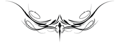

FAUST - II

Tragedyanın İkinci Bölümü Beş Perde
Birinci Perde
HOŞ BİR YÖRE
(Faust, çiçek dolu çimenlere uzanmış, yorgun, huzursuz,uyumaya çalışır)
(Alacakaranlık)
(Halka halinde, süzülerek devinen ruhlar, sevimli küçük periler)
ARIEL
(Eol harpı200 eşliğinde bir ezgi)
200 Rüzgârın tellerine çarpmasıyla ses veren, üç köşeli eski bir müzik âleti.
Çiçeklerin bahar yağmuru
Uçuşarak serpilirken herkesin üstüne,
Tarlaların yeşil bereketi
Göz kırparken tüm canlılara,
Küçücük perilerin yüce ruhu
Koşar herkese yardıma;
İyi veya kötü, dara düşen her bir kişi
Uyandırır onlarda şefkat hissi.
Ey, bu başın çevresinde daireler halinde uçuşan periler,
Davranın sizler de soylu perilere yakışacak şekilde:
Dindirin onun yüreğindeki öfkeli karmaşayı!
Çekip çıkartın vicdan azabının kor gibi acı oklarını,201
201 Gretchen tragedyasına gönderme.
Arındırın onun içini yaşadığı dehşetten!
Dört tanedir gece nöbetinin aralıkları:202
202 Eski Romalılar “vigilae” denilen gece nöbetlerini (18-21, 21-24, 24-3, 3-6 arasındaki saat dilimleri) dörde ayırırlardı. Koronun dört bölümden oluşan şarkısı da bu dilimleri yansıtmaktadır.
Değerlendirin onları gecikmeden, dostça!
Yerleştirin önce onun başını serin bir yastığa,
Ardından yıkayın Lethe’nin203 şebnemli sularında!
203 Eski Yunanlıların inancına göre ölüler yer altındaki Lethe ırmağının suyundan içince yaşadıklarını unuturlardı. Ariel, Faust’un da aynı şekilde Gretchen tragedyasını unutmasını diliyor.
Kıpırdar hemen kaskatı kesilmiş uzuvları,
Güçlenerek yeni güne doğru huzurla uzanır:
Gerçekleştirin perilerin en güzel görevini:
Döndürün onu kutsal ışığa geri!
KORO
(Teker teker, iki ve daha fazla ses, sırayla ve toplu halde.)
Doldururken ılık rüzgârlar
Yeşile bürünmüş vadileri çepeçevre,
Tatlı kokular, sis katmanları
Yolluyor alacakaranlık etrafa,
Fısıldıyor sessizce tatlı bir huzur,
Sallıyor gönlümüzü çocuk mutluluğu içinde,
Ve kapatıyor günün kapılarını,
Yorgun adamın göz kapaklarını.
Çöktü artık gece,
Ekleniyor yıldız yıldıza kutsalca,
Büyük ışıklar, küçük kıvılcımlar
Işıyor yakında ve parlıyor uzakta,
Parıldıyor burada göle yansıyan ışıklar,
Parlıyor yukarıda, berrak gecede;
En derin huzurun mutluluğunu perçinleyen
Ay, hüküm sürüyor tüm görkemiyle.
Silindi, geçti artık o demler,
Uçup gitti acılar ve hazlar;
Sez şimdiden: Bulacaksın derman!
Güven yeni doğan güne!
Yeşeriyor vadiler, kabarıyor tepeler,
Dinleniyor çalılıklar gölgede,
Ve salınan gümüş dalgalarla
Olgunlaşıyor ekin hasat için.
Erişmek için her arzuna,
Bak oradaki parlaklığa!
Bağlanmışsın zaten incecik bağlarla,
Bir örtüdür uyku, silkin at onu!
Çekinse de etrafındakiler kararsızlık içinde,
Bocalama, cesur ol sen!
Başarır her şeyi,
Anlayan ve hızla kavrayan soylu kişi.
(Müthiş bir patırtı güneşin yaklaşmakta olduğunu bildirir.)
ARIEL
Dinleyin! Dinleyin Hora’ların204 fırtınasını!
204 Mevsimleri temsil eden eski Yunan tanrıçaları.
Çınlatıyor ruhun kulaklarını
Doğuyor artık yeni bir gün.
Gıcırdıyor gümbürtüyle kaya kapıları,
Dönüyor takırdayarak Föbus’un tekerlekleri,
Nasıl bir gürültü bu, ışığın getirdiği!
Çalınıyor trompetler, ötüyor borular,
Kamaşıyor gözler ve şaşırıyor kulaklar,
İşitmemelisin duyulmayan şeyleri sen de.
Sığının çiçek taçlarının içine,
Derine, daha derine, barınabilmek için sessiz bir yerde,
Kayaların içine, yaprakların altına!
Yakalarsa sizi bu sesler, olursunuz sağır.
FAUST
Atıyor yaşamın nabzı taze bir canlılıkla,
Selâmlamak için tüller arasından süzülerek doğan sabahı
yumuşakça;
Sen, ey yeryüzü, kıpırdamadın bu gece de
Ve yenilenmiş güçlenmiş, nefes alıyorsun ayaklarımın dibinde,
Başladın bile beni zevkle sarmalamaya,
Canlandırıyorsun, uyandırıyorsun içimdeki güçlü kararlılığı,
Durmaksızın o en yüksek varlığa ulaşma arzusunu.—
Şafak ışıklarına bürünmüş bile dünya,
Çınlıyor orman binlerce canlının sesiyle;
Sarılmış vadiler içinden ve dışından bir sis şeridiyle,
Ama iniyor yine de gökyüzünün berraklığı derinlere,
Ve fışkırıyor dallar ve budaklar, körpe bir canlılıkla,
Uyudukları mis kokulu toprağın derinliklerinden.
Gözüküyor berrak renkler de birer birer topraktan,
Titreyen incilerin damladığı ağaçlar ve yapraklardan:
Oluşuyor bir cennet dört bir yanımda.
Bak yukarıya! Dağların dev zirveleri
Müjdeliyor şimdiden en görkemli saatin gelişini;
Önce onlar varıyor keyfine,
O sonsuz ışığın, yönelecek olan sonra, aşağıya bize.
Şimdi yeşile bürünmüş çimenlerine Alp yaylasının
Bahşediliyor yeni bir parlaklık ve berraklık,
Ve gerçekleşiyor kademe kademe—
İşte çıkıyor güneş ortaya! —Ve ne yazık ki,
kamaşınca gözlerim hızla,
Dönüyorum başka bir yana, gözlerimin ağrısıyla.
Böyle olurmuş demek, ümit özlemleri içinde
Çalışınca erişmeye en büyük arzuna, var gücünle,
Ve bu arzuyu gerçekleştirecek kapıları ardına kadar açık bulunca.
Ş imdi ama yükseliyor o sonsuz derinliklerden
Taşkın bir ışık, şaşıp kalıyoruz:
Tutuşturmak istemiştik yaşam meşalesini,
Kuşatıyor bizi bir ateş denizi, hem de ne ateş!
Aşk mı? Nefret mi? Kor alevleriyle saran bizi,
Sırayla acı ve sevince boğan,
öyle ki çeviriyoruz bakışlarımızı toprağa yine,
Gizlemek için kendimizi hoş gençliğin örtüsüne.
öyleyse, varsın arkamda kalsın güneş!
Bir çağlayan, kayaların arasından fışkıran,
Bakarım ben ona artan bir hayranlıkla.
Her akışında ilkin binlerce,
Sonra sonsuz sellerle taşan,
Yükseklere köpük üstüne köpük saçan.
Ne görkemlidir, bu fırtınanın yarattığı
Rengârenk gökkuşağının değişken varlığı;
Bazen berrak çizgilerle, bazen havada eriyerek,
Çevreye güzel kokulu ferah serpintiler yayması.
Yansıtır gökkuşağı insanın hedef ve eylemini.
Düşün, kavrayacaksın daha iyi:
Renkli bir yansımadır yaşam.
İMPARATOR SARAYI
TAHT ODASI
(Devlet şûrası imparatorun gelmesini beklemektedir. Borazanlar çalınır. Gösterişli giysileri içinde, her türlü saray görevlisi. imparator tahtına oturur, sağ yanında müneccim.)
İMPARATOR
Selâmlıyorum uzaktan ve yakından,
Gelerek burada toplanan sevgili sâdık ahalimi.—
Görüyorum yanımda bilge kişiyi,
Peki nerede kaldı şu soytarı?
BİR SOYLU
Hemen mantonun eteği arkasında
Yığılıp kaldı merdivenlerde;
Alıp götürdüler yağ tulumunu:
Bilinmiyor, ölü mü yoksa sarhoş mu?
İKİNCİ SOYLU
Anında müthiş bir hızla
Geçiyor başka bir soytarı onun yerine.
Giyinmiş pek de süslü püslü,
Ama maskaralıklarıyla şaşırtıyor herkesi;
Tutmuşlar nöbetçiler eşikte
Çaprazlamasına kılıçlarını—
Yine de girmiş o içeri, cesur soytarı!
MEFİSTOFELES
(Tahtın önünde diz çökerek)
Nedir lânetlenen ve her zaman hoş karşılanan?
Nedir özlenen ve her zaman kovulan?
Nedir sürekli koruma altına alınan?
Nedir kıyasıya azarlanan ve yakınılan?
Kimi çağırmamalısın buraya?
Kimdir, adının anılmasından herkesin memnun olduğu?
Nedir yaklaşan tahtının basamaklarına?
Nedir kendini sürgüne yollayan?
İMPARATOR
Bu seferlik kendine sakla sözlerini!
Bilmecelerin yeri değil şimdi,
Bu, o beylerin görevi.—
Çöz bakalım sen! İsterdim duymak:
Korkarım, gitti eski soytarım uzaklara;
Geç onun yerine ve otur yanıma!
(Mefistofeles basamakları çıkarak imparatorun solunda durur.)
KALABALIĞIN HOMURDANMASI
Yeni bir soytarı —Başımıza yeni bir belâ—
Nereden geliyor bu? —Nasıl girmiş içeri?—
Gözden düştü eskisi —Harcadı kendini, bitirdi—
Fıçı gibiydi eskisi —Yenisi ise çöp gibi—
İMPARATOR
Ve öyleyse, sevgili sâdık bendelerim.
Hoş geldiniz uzaklardan ve yakından!
Toplandınız burada, yıldızlar da sizden yana:
Mutluluk ve kurtuluş yazılmış adımıza yukarıda.
Söyleyin bakalım ama, niye tam da bu günlerde,
Dertlerimizden kurtulmak istediğimiz şu demlerde,
Karnaval maskelerimizi takmış neşe içinde
Ve sadece keyfimize bakacağımız yerde,
Niçin toplayarak meclisi eziyet ediyoruz kendimize?
Ama madem ki diyorsunuz, olması gerekiyordu böyle diye,
Toplandık bir kere, görüşelim öyleyse.
BAŞBAKAN
En yüksek erdem, bir hâle gibi,
Sarmış imparatorun başını, o’dur ancak
Bu erdemi lâyıkıyla uygulayacak:
Adalet! Bütün insanların sevdiği,
Herkesin istediği, arzu ettiği, vazgeçemediği adaleti,
Bağışlamak halka, imparatorun elindedir yalnızca.
Ama ah! Neye yarar insanın kafasındaki akıl,
Kalbindeki iyilik, elindeki beceri,
Hummalı bir şekilde karıştıysa işler devlette,
Ve kötülük kötülüğü izlerse!
Bu yüksek yerden engin ülkeye bakan bir kişi
Kötü bir düş gördüğünü sanır sanki,
Hüküm sürüyor orada düzensizlik, düzensizlik içinde,
Üstün geliyor hukuken kanunsuzluk
Ve oluşuyor bir yanılgılar dünyası.
Çalar kimisi sürüleri, kaçırır kadınları diğerleri,
Mihraptan kupayı, haçı ve şamdanı,
Övünür bunlarla yıllarca
Zarar gelmeden kılına dolaşır rahatça.
Üşüşüyor davacılar şimdi salona,
Oturmuş yargıç yüksek koltuğuna,
Dalgalanıyor bu arada öfkeli akınlarla
Giderek büyüyen isyanın kargaşası da.
Serbesttir, alçaklığı ve suçlarıyla övünmekte,
Suç ortaklarına sırtını dayayan kişi,
Ve : “Suçlu!” diye karar verilir,
Kendinden başka onu koruyacak kimsesi olmayan suçsuz
hakkında.
Paramparça oluyor böylece dünyamız
Kaybediyor tüm gücünü edepli davranış;
Nasıl gelişebilir bu durumda akıl,
Bizi doğruya götürecek tek unsur?
Sonunda sağlam ahlâklı kişi de
Yöneliyor dalkavuklara ve rüşvetçilere;
Cezalandıramayan hâkim,
Birlik oluyor sonunda suçluyla.
Karanlık bir tablo çizdim; aslında
Bir bahar havası görmeyi tercih ederdim.
(Sessizlik)
Kaçınılamaz kanunlardan;
Herkes zarar görüyor ve herkes katlanıyorsa buna,
Yağma edilir majestelerinin tahtı bile.
ORDU KOMUTANI
Nasıl da azdı ayaklanmalar bu şiddetli günlerde!
Vuruyor herkes ve vuruluyor kendisi de,
Ve aldıran yok emirlere.
Surlarının ardındaki vatandaş,
Kaya yuvalarında derebeyi
Ant içmişler direnmek için bize,
Tutmuşlar sımsıkı savaş güçlerini.
Sabırsızlanıyor paralı asker,
Dikleşerek maaşını istiyor,
Ve hiç borcumuz kalmamış olsaydı ona,
Kaçıp giderdi bakmadan ardına.
Yasaklarsa birisi herkesin istediği şeyi,
Çomak sokmuştur arı kovanına;
Korumaları gereken ülke,
Talan edilmiş ve perişan halde.
Bastırılmazsa bu çılgın ayaklanmalar,
Elden gider dünyanın yarısı bir anda;
Başka krallar da var ülke dışında,
Ama düşünmüyor hiçbiri bunların kendisini ilgilendirdiğini.
HAZNEDAR
Kim güvenir ki müttefiklere?
Bize vaat edilen yardımlar,
Kesiliverdi suyu akmayan çeşme gibi.
Üstelik, efendimiz, senin geniş ülkende
Mal mülk şimdi kimlerin elinde?
Gittiğimiz her yerde karşımızda bir türedi,
Ve bağımsız yaşamaktır isteği;
Seyirci kalabiliriz ancak yaptıklarına:
O kadar ferâgat ettik ki haklarımızdan,
Kalmadı hakkımız hak iddia etmeye.
Adları ne olursa olsun, partilere de,
Güven olmuyor günümüzde;
İster sövsünler, ister övsünler,
Önemsizdir sevgileri ve nefretleri.
Ghibelin’ler ve Guelf’ler205
205 Ghibelin’ler, 13. yüzyılda İtalya’da imparator taraftarı, Guelf’ler papa taraftarı parti. Goethe, eser boyunca bu iki partinin ismini sık sık tekrarlayarak particiliği kınayacaktır.
Gizleniyorlar dinlenmek için;
Kim ister yardım etmek komşusuna şimdi?
Herkes kendi işinin peşinde.
Kitlenmiş kapıları altın ambarlarının,
Eşeliyor, kazıyor ve biriktiriyor her bir kişi,
Oysa kasalarımız bomboş duruyor.
VEKİLHARÇ
Ne sıkıntılara katlanıyorum ben de!
Tasarruf etmek istiyoruz her gün
Ve artıyor her geçen gün gereksinimlerimiz,
Ve doğuyor her gün yeni bir dert.
Eksiği yok aşçıların:
Yaban domuzları, geyikler, tavşanlar, karacalar,
Hindiler, tavuklar, kazlar ve ördekler,
Ödenekler, sağlam gelirler,
Fena değil hiç vaziyetleri;
Ne var ki, tükenmek üzere şarap.
Fıçılar yanyana sıralanmışken eskiden mahzende
Doluyken en iyi markalar ve rekolte ile,
Asil efendilerimizin sonsuz içki âlemleri
Son damlasına kadar tüketti şişedekileri.
Satmak zorunda stoklarını şehir meclisi de,
Gasp ediliyor kap, kaçak içki kadehi niyetine,
Ve masanın altında son buluyor içki âlemi.
Ve şimdi ödemem gerekiyor benim bu giderleri, herkesin maaşını;
Gözümün yaşına bakmayacaktır Yahudi:
İsteyecektir peşinen,
Yıldan yıla artan faizleri.
Semirmeyecek artık domuzlar,
Yatak yorgan bile rehinde,
Konacak ekmek artıkları sofrada önümüze.
İMPARATOR
(Biraz düşündükten sonra Mefistofeles’e)
Söyle bakalım, soytarı, yok mu anlatacak bir derdin senin de?
MEFİSTOFELES
Benim mi? Asla. Gördükçe etraftaki ihtişamı,
Seni ve maiyetini! —Eksik olabilir mi ki güven
Majestelerinin tartışmasız egemen olduğu,
Hazır güçlerin düşmanı mahvedebileceği memlekette?
İ yi niyetin akıl ile birleştiği,
Ve bir çok işlerin görüldüğü yerde?
Hangi kötü güçler birleşebilir,
Sürüklemek için karanlığa, böyle yıldızların parladığı bir ülkede?
HOMURDANMALAR
Maskaranın teki —Biliyor işini
Sırnaşıyor yalanla —İdare edebildiği sürece—
Bilirim iyi —Bunun arkasındaki hileyi—
Peki ne olacak sonra? —Bir planı var—
MEFİSTOFELES
Nerede her şey eksiksiz ki bu dünyada?
Eksik kiminde bu, kiminde de şu, burada da yok para.
Toplanamaz yerden, bu kesin;
Sağlar ama bilgelik, en derindekileri bile.
Dağların damarlarında, duvarların dibinde
Bulunur altın, sikke veya külçe şeklinde,
Ve soruyor musunuz bana, kim gün ışığına çıkartacak bunu diye:
Yetenekli insanın doğa ve akıl gücü!
BAŞBAKAN
Doğa ve akıl —Konuşulmaz böyle Hıristiyanlarla!
Yakıyorlar işte bundan dolayı dinsizleri,
Son derece tehlikeli olduğu için bu tür söylevler.
Doğa günahın kendisi, akıl ise şeytan,
Beslerler kendi aralarında şüpheyi,
Hilkat garibesi melezlerini.
Konumuz değil bizim bunlar! —Eski topraklarından imparatorun
Türemiştir sadece iki tip soy,
Lâyıkıyla korur tahtı bunlar:
Din adamlarıdır birisi, diğeri ise soylular;
Koyarlar karşı her fırtınaya
Ve el koyarlar ödül olarak kilise ve devlete.
Avam takımının karışık kafaları
Bir direniş çıkarır ortaya:
Dinsiz bunlar! Büyücülerin elebaşları!
Ve mahvediyorlar bunlar kenti ve tüm ülkeyi.
Uğraşıyorsun sen küstah şakalarla
Sokmaya bunları yüksek çevrelere;
Yanaşıyorsunuz içi fesat dolu birine:
Yakın akrabadır bunlar soytarılarla.
MEFİSTOFELES
Buradan anlaşılır işte bilgin kişi!
Uzaktadır millerce sizden, dokunamadığınız şey,
Yok sayarsınız elinizle tutamadığınız şeyi,
Değildir gerçek, düşünemediğiniz şey, sizce,
Yoktur tartamadığınız şeyin ağırlığı,
Kendi basmadığınız para ise, geçerli değildir size göre!
İMPARATOR
Giderilemez ki eksiklerimiz böylece;
Nedir söylemek istediğin bu perhiz vaazlarınla?
Doydum sonsuz “nasıl” ve “eğer” sözlerine;
Yok paramız işte: Bul bakalım öyleyse!
MEFİSTOFELES
Sağlarım istediğinizi size, hattâ daha fazlasını bile;
Kolaydır bu, ama zordur kolay olan da.
Para burada, ama ele geçirmek onu,
Budur marifet işte! Kim becerebilir bunu?
Düşünün bir kere: O korkunç dönemlerde,
İnsan sellerinin ülkeleri ve halkı boğduğu günlerde,
Öteki beriki, ne kadar korkmuş olsa da,
Saklamıştır hazinesini oraya buraya.
Hep böyleydi durum Romalıların güçlü olduğu zamandan beri,
Ve böyle süregelmiştir hep, düne, hattâ bugüne dek.
Sessizce gömülü durur toprağa hazineler:
İmparatorundur bu topraklar, buyursun alsın öyleyse!
HAZNEDAR
Hiç de fena konuşmuyor bir soytarıya göre;
Hakkıdır gerçekten de gömüler yaşlı imparatorun.
BAŞBAKAN
Altın örgülü ağlar geriyor şeytan çevrenize:
Olup bitenler hayra alâmet değil.
VEKİLHARÇ
Sağlayabilse keşke, hoşumuza gidecek armağanları sarayda,
Razıyım çoktan ben ettiğim haksızlıklara.
ORDU KOMUTANI
Soytarı akıllı! Vaat ediyor herkese uygun şeyi;
Umurunda değil ki askerin, nereden geldiği!
MEFİSTOFELES
Sanıyorsanız benim sizi kandırdığımı:
Sorun şurada duran adama, sorun müneccime!
Bilir o daire içindeki daireyi, saati ve ânı.
Söyle bakalım öyleyse: Nedir durum gökyüzünde?
HOMURDANMALAR
İki soytarı bunlar —Anlaştılar bile
Soytarı ve hayâlperest —Tahtın burnunun dibinde
Yıpranmış şarkılar —Eski palavralar
Fısıldıyor soytarı —Konuşuyor bilgin—
MÜNECCİM
(Konuşur, Mefistofeles kulağına fısıldar.)
Saf altındandır güneşin kendisi de;
Habercisi Merkür, hizmet verir sevgi ve ücret karşılığında;
Büyülemiştir Bayan Venüs hepinizi,
Sevgiyle bakar size gençliğinde ve ileri yaşlarda;
İffetli Ay ışıldar kaprisle;
Mars, bulamayınca sizi, tehdit eder gücüyle,
Ve Jüpiter, her şeye rağmen, en güzel yıldızdır;
Büyüktür Satürn, uzaktadır ve küçük görünür gözümüze;
Göstermeyiz pek saygı maden olarak ona:
Pahada hafif, ama yükte ağırdır.
Evet, Ay zarafetle Güneş’le birleşirse
Ederse eşil gümüş altına, dönüşür cennete dünya!
Kolaydır bundan sonra elde etmek istediklerinizi:
Saraylar, bahçeler, memecikler, al yanaklar,
Sağlar tüm bunları yüksek bilgili bir adam,
Başarır o, aramızdan kimsenin yapamadığını.
İMPARATOR
Dinliyorum dikkatle dinliyorum,
Ve olamıyorum ikna, yine de.
HOMURDANMALAR
Ne işimize yarar bunlar? —Bayat şakalar—
Müneccimlik —simyacılık—
Çok duydum bunları —Ve kapıldım ümide boş yere—
Ve gelse bile —Dolandırıcının teki—
MEFİSTOFELES
Toplanmışlar burada ve şaşkınca bakışıyorlar,
Güvenmiyorlar bu büyük buluşa;
Saçmalıyor kimisi ademotu diye,
Sayıklıyor kara köpeği bir diğeri.
Neye yarar, iğnelemesi birinin şakalarla,
Yakınması diğerinin büyücülükten,
Kaşınınca onun da bir gün tabanı,
Atamayınca eskisi gibi adımlarını!
Hissediyorsunuz hepiniz gizli etkilerini
Sonsuz egemen doğanın,
Ve en alt katmanlarından dünyanın
Süzülmekte yukarı doğru canlı belirtiler.
Seğirmeler hissederseniz tüm uzuvlarınızda,
Esrarengiz gelirse size bulunduğunuz yer,
Kazın oyalanmadan, çapalayın toprağı:
Oradadır üçkâğıtçı, oradadır define!
HOMURDANMALAR
Kurşun gibi oldu ayaklarım—
Uyuşuyor kolum —Damla hastalığı bu—
Karıncalanıyor ayağımın baş parmağı—
Ağrıyor her tarafı sırtımın—
Bu işaretlerden anlaşıldığına göre
Burada gömülü olmalı en büyük define.
İMPARATOR
Haydi, çabuk ol! Kaçamazsın bu sefer,
Kanıtla beş para etmeyen yalan sözlerini
Ve göster derhal bize o değerli yerleri!
Bırakacağım kılıcımı ve asamı şuraya
Ve kendi asil ellerimle,
Söylemiyorsan yalan, tamamlayacağım işi,
Söylüyorsan eğer yalan, göndereceğim cehenneme seni!
MEFİSTOFELES
Sanırım, bulabilirim oranın yolunu!—
Ancak veremem yeterince bilgi,
Her tarafta bekleyen sahipsiz definelerle ilgili.
Çift süren bir çiftçi,
Çıkartabilir altın bir çömlek topraktan;
Umarken kayatuzu bulmak çamurlarda
Ve karşılaşınca çil çil altınla,
Korkarak, sevinçle doluverir zavallı elleri.
Uçurmalıdır birçok yeraltı geçitlerini!
Sokulmalıdır yarıklara, mahzenlere
Bilinçli define arayan kişi
Ulaşmak için yakındaki yer altı hazinesine!
Eskiden kalma geniş mahzenlerde
Maşrapalar, sahanlar, tabaklar
Bulur yan yana dizili;
Görür yakut sürahiler,
Ve kullanmak isterse bunları eğer,
Beklemektedir yanında yıllanmış bir sıvı.
Ama —inanacak mısınız işin ustasına?—
Çürümüş çoktan fıçıların tahtası
Sunmuş yeni bir fıçı şaraba, kendi tortusu.
Sadece altın ve mücevherlerin değil,
Nadide şarapların kokuları da,
Sarılmış karanlık ve korkuyla.
Yılmadan araştırır bilgin kişi.
Marifet değildir, gündüz ışığında fark etmek bunları,
Karanlıkta saklıdır esrarengiz şeyler.
İMPARATOR
Senin olsun bunlar! Ne faydası var karanlığın?
Değeri varsa bir şeyin, çıkmalı aydınlığa.
Kim tanır ki gece karanlığında düzenbazı lâyıkıyla?
Siyahtır inekler, kediler ise gri.
Gelelim yer altındaki, altın dolu küplere,
Sarıl sabanına ve çıkart ışığa bunları!
MEFİSTOFELES
Al kazma ve küreği eline, kaz kendin!
Olgunlaştırır seni rençperlik,
Ve altın buzağılarla dolu sürün,
Çıkar gelir toprağın içinden.
O zaman işte tereddüt etmeden, keyifle
Süsleyebilirsin kendini, sevgilini:
Yüceltir ışık saçan renkli parlak taşlar
Hem güzelliği hem de egemenliği.
İMPARATOR
Haydi çabuk! Çabuk hemen! Ne kadar bekleyeceğiz daha?
MÜNECCİM
(Yukarıdaki gibi)
Efendim, dizginle bu şiddetli arzunu
Bırak bitsin gitsin bu karışık eğlence!
Ulaştırmaz dağınık bir kafa bizi hedefe.
Arınmalıyız itidal içinde günahlarımızdan önce
Kendimizden aşağıda olanı, kazanmalıyız yücelikle.
İyilik isteyen, olmalı iyi kendisi önce,
Sevinç isteyen, yatıştırmalı kanını,
Şarap isteyen, sıkmalı olgun üzümleri,
Mucize bekleyen, güçlendirmeli inancını!
İMPARATOR
Öyleyse eğlenceyle geçirelim zamanı!
Geliyor tam zamanında perhiz yortusu.
Kutlayalım bu arada her koşulda,
Çılgın karnavalı daha büyük coşkuyla.
(Borazanlar çalınır. Dağılırlar.)
MEFİSTOFELES
Nasıl da bağlıdır kazanç ve şans birbirine,
Aklına gelmez bu salakların tek bir kere;
Olsaydı onlarda bilgelik taşı,
Kalmazdı bilgelik taşın kendisinde.
GENİŞ BİR SALON
(Yan taraflarda maskeli balo için süslenmiş ve hazırlanmış odalar)
HABERCİ
Sanmayın ki bir Alman eğlencesindesiniz
Şeytanın, soytarıların ve ölülerin dans ettiği yerdesiniz!
Beklemekte sizi neşeli bir cümbüş.
Hükümdarımız, Roma Seferinde,
Hem kendi çıkarına, hem de memnun etmek için sizi,
Aştı yüksek Alp’leri,
Ele geçirdi neşeli bir ülkeyi.
O, imparator, kapanarak kutsal ayaklara
İzin istedi evvela egemenlik hakkı için,
Ve almaya gittiğinde tacını,
Getirdi bize soytarının külahını da.
Yeni doğmuş gibi olduk hepimiz;
Her görmüş geçirmiş kişi
Geçiriyor onu başına keyifle:
Benziyor zıpır soytarıya,
Davranıyor külahın altında akıllıca, olduğunca.—
Görmekteyim şimdiden toplandığını kalabalığın
Salınarak dolaşmasını, hoş çiftler oluşturmasını;
İtiyor kalabalık kalabalıkları.
Bir içeri, bir dışarı, taşıyor muzırlık!
Değişen bir şey yok sonuçta
Yüz binlerce maskarasıyla
Koca bir budaladan farklı değil dünya!
ÇİÇEKÇİ KIZLAR206
206 İtalya seferinden Almanya’ya dönen imparatorla birlikte saraya gelen genç Floransalı kızlar.
(Mandolin eşliğinde şarkılar.)
Kazanmak için beğeninizi,
Süslendik biz bu gece,
Biz, Floransa’lı genç kızlar,
Katıldık Alman sarayının ihtişamına.
Taktık kahverengi buklelerimize
Renkli çiçekler, süsler;
İpek teller ve ipek kurdeleler
Oynuyorlar onlar da rollerini.
Sanırız hak ettik,
Değerli övgülerinizi:
Bakın yaptığımız parlayan çiçeklere
Açarlar yıl boyu.
Her renkten parçaları
Birleştirdik simetri içinde;
Teker teker tuhaf gelebilir belki size,
Ama kapılırsınız tümünün cazibesine.
Hoştur görünüşümüz,
Bahçevan kızlarız biz, zarifiz;
Kadının doğası zira
Yakın akrabadır sanatla.
HABERCİ
Gösterin bolluğu sepetlerinizdeki,
Başlarınızın üstünde taşıdığınız,
Kollarınızdan taşan renkleri!
Seçsin herkes beğendiğini!
Çabuk olun ki, köşe bucak
Dönüşsün birer bahçeye!
Değer sevilmeye hepsi,
Çiçekler ve kızların kendileri.
ÇİÇEKÇİ KIZLAR
Haydi edin alışveriş bu neşeli yerden,
Yalnız, yapılmasın pazarlık!
Kısa ve özlü sözlerle,
Söylesin herkes istediğini.
ÜSTÜNDE MEYVESİ BULUNAN BİR ZEYTİN DALI
İmrenmem hiçbir çiçek bahçesine,
Kaçınırım her türlü sürtüşmeden;
Aykırıdır bu doğama:
Özüyüm ne de olsa memleketin
Ve, olarak sağlam bir güvence,
Simgesiyim barışın her yerde.
Bugün, umuyorum, başaracağım,
Süslemeyi lâyık olan güzel bir başı.
BAŞAKLARDAN ÖRÜLMÜŞ BİR TAÇ
(Altın renginde)
Ceres’in hediyeleri, süslemek için sizi,
Duracaktır üzerinizde hoş ve sevimli:
Olsun güzel bir süs hepinize
Yararlı oldukları için çok istenilen şeyler.
YAPAY TAÇ
Ebegümecine benzeyen rengârenk,
Yosunlardan örülmüş olağanüstü çiçekler!
Değildir alışık doğa bunlara,
Modadır onları çıkartan ortaya.
YAPAY DEMET
Adımı söylemeyi size
Alamaz Theophrast bile göze,
Umarım ki yine de, herkesin olmasa bile,
Giderim bazılarının hoşuna,
İsterim adamak kendimi ona,
Takarsa beni saçlarına,
Karar verebilirse,
Yer vermeye bana gönlünde.
GÜL KONCALARI
(iddialı)
Varsın aşırı gösterişli yapay çiçekler
Uysun günün modasına,
Çıksın ortaya harikulade garip şekiller,
Sermediği Doğa’nın asla gözler önüne.
Yeşil saplar, altından çanlar,
Sarkıyor gür buklelerin arasından!—
Gizleriz ama biz kendimizi;
Mutludur, tazeyken keşfeden bizi!
Gelince yaz,
Tutuşur gül koncaları,
Kim vazgeçebilir bu mutluluktan?
Söz vermek ve yerine getirmek o sözü,
Egemendir Flora’nın diyarında
Görüş, akıl ve yüreğe aynı anda.
(Yeşil, yaprak dolu bir kemerin altında çiçekçi kızlar itinayla sepetlerini süslerler.)
BAHÇIVAN
(Bas kemanlar eşliğinde bir şarkı.)
Görün açılmasını çiçeklerin sessizce
Süslemelerini başınızı albeniyle!
Değildir baştan çıkarmak onların niyeti,
Bakarak tatlarına çıkartın keyfini.
Sunarsa size esmer yüzler
Kirazlar, şeftaliler ve erikler,
Alın onları! Çünkü dil ve damağın karşısında
Yetersizdir gözün yargıları.
Gelin, en olgun meyvelerden
Zevkinizle ve keyfinizce yiyin!
Şiir yazılabilir güller hakkında,
Isırılmak içindir oysa elma.
İzin verin eşlik etmemize size
Sizin şu bol gençlik çiçeklerinize,
Ve süsleriz yanınızdaki yeri biz de
Olgun ürünlerimizin bereketiyle.
Neşe saçan çardakların altında,
Süslenmiş kameriyelerde,
Bulunur hepsi bir arada:
Goncalar, yapraklar, çiçekler, meyveler.
(Koroların ikisi de, gitar ve baso kemanların eşliğinde, sırayla şarkı söyleyip mallarını süsleyerek dizmeye ve sergilemeye devam ederler.)
(Anne ve Kız)
ANNE
Kızım, dünyaya geldiğinde seni,
Süslemiştim minicik bir başlıkla;
Öyle sevimliydi yüzün
Ve öyle narindi ki bedenin.
Düşündüm hemen gelin olarak seni,
Verdim seni en zenginine,
Düşündüm olduğunu küçük bir kadın.
Ah, uçup gitti bile yıllar
Faydalanmadan öylesine,
Her türlü aday
Hızla geçip gitti!
Ettin dans kimiyle çevikçe,
Verdin işaret kimine
Dirseğinle, anlamlı.
Düzenlediğimiz her türlü eğlence,
Yapıldı hepsi boş yere:
Rehin almaca ve köşe kapmaca
Yaramadı hiçbir işe;
Meydanda bugün bütün budalalar:
Aç koynunu yavrum sen!
Olur da yakalarsın birini.
(Genç ve güzel oyun arkadaşları da aralarına katılır; samimi konuşmalar duyulur.)
(Balıkçılar, kuşçular ellerinde ağlar, oltalar, ökseler ve diğer bazı gereçlerle onların arasına karışır. Karşılıklı yakalama, kaçma ve tutma deneyleri en tatlı konuşmalara yol açar.)
ODUNCULAR
(Kaba saba hareketlerle içeri girerler)
Çekilin! Aralanın bakalım!
Geniş alanlar gerekli bize:
Keseriz biz ağaçları,
Çatırdar, yıkılır ağaçlar,
Ve taşırken biz onları,
Toslarız sağa sola.
Övmek isterseniz bizi
Anlaşalım bir konuda;
Çalışmasaydı bizim gibi
Kabalar bir ülkede,
Nasıl var olurdu
Kibarlar,
İstedikleri kadar uğraşsalar da?
Sokun aklınıza şunu!
Donmuştunuz bile siz,
Terlemeseydik eğer biz.
PULCINELLE207
207 İtalyan komedisinde palyaço figürü.
(Çocuksu, neredeyse aptalca)
Budalasınız siz,
Doğmuşsunuz beli bükük.
Akıllılarız biz,
Taşımadık ki hiçbir yük;
Kolaydır çünkü giymek,
Külahlarımızı
Ceket ve giysilerimizi.
Hep aylak aylak,
Ayağımızda terlikler
Böbürlenerek dolaşmak
Çarşıda pazarda,
Bakınmak sersem sersem,
Horozlanmak,
Duyunca böyle sesleri
Kalabalığın arasından
Kıvrılmak yılan gibi,
Hoplamak hep beraber,
Zıplamak birlikte.
İster övün bizi,
İster sövün,
Kabulümüzdür hepsi.
ASALAKLAR
(Yaranarak — Yılışarak)
Siz yiğit hamallar
Ve bacanaklarınız
Kömürcüler,
Adamlarımızsınız siz bizim;
Tüm o eğilmeler,
Onaylayan baş eğmeler,
Dolambaçlı sözler,
Katmerli yardakçılıklar
Isıtan ve donduran,
İnsanın içini,
Ne işe yaradı bunlar?
İsterse insin
Gökten
Korkunç ateşler,
Olmasaydı bu odunlar
Ve yığınla kömürler
Yakılamazdı
Geniş ocaklar.
Cızırdar, kızarır,
Pişer ve kaynar bu ocaklarda!
Bilenler ağızlarının tadını,
Çanak yalayıcılar,
Alırlar kızartmanın kokusunu,
Hissederler balığın piştiğini;
Yanaşırlar ağız tadıyla
Velinimetlerinin masasına.
SARHOŞ
(Bilinçsizce)
Bakmasın yan kimse bugün bana!
Öyle rahat, öyle özgür hissediyorum ki kendimi;
Yeni zevkleri ve neşeli şarkıları,
Getiren benim sizlere.
İçiyorum öyleyse! Sen de iç! Sen de iç!
Tokuştursanıza kadehleri! Çin! Çin!
Hey, sen, arkadaki, yaklaşsana buraya!
Tokuşturun kadehleri, böyle içilir içki.
Bağırdı çağırdı karıcığım öfkeyle,
Büktü dudak bu rengârenk kıyafetime küçümsemeyle
Satsam da çalım, istediğim kadar,
Yuhaladı beni bostan korkuluğu diye.
Ama içiyorum ben yine! İç sen de! İç sen de!
Toku şturalım kadehleri! Çin! Çin!
Korkuluklar, tokuşturun siz de kadehlerinizi!
Çınlasın kadehler, ha işte böyle.
Düşünmeyin kaybettiğimi yolumu!
Canımın istediği yerdeyim.
Vermezse meyhaneci borç, verecektir karısı,
Ve verir hizmetçi kız, o da olmazsa.
İçiyorum hep! İç sen de! İç sen de!
Haydi, sizler de! Çin! Çin!
Tokuştursun kadeh, herkes herkesle, devam!
Sanırım, girdi yoluna işler.
Eğleneyim nerede ve nasıl olsa,
İçki hep yanımda:
Bırakın kalayım sızdığım yerde!
Duramıyorum çünkü artık ayakta.
KORO
İçin! İçin bütün kardeşler!
Yeniden hep, şerefe çin çin!
Oturun sağlam sandalyelerde, sıralarda!
Bitmiştir işi masanın altına düşenin.
HABERCİ
(Doğa şairleri, saray şairleri, saz şairi şövalyeler gibi kimi duygulu kimi heyecanlı şairlerin geldiğini duyurur. Her türden yarışmacının bulunduğu bu kalabalıkta kimse kimseye söz hakkı tanımaz.)
(Aralarından biri bir kaç kelime ederek geçer.)
HİCİVCİ
Bilir misiniz, şair olarak beni
Ne sevindirir özellikle?
Söyleyebilseydim şarkı ve konuşabilseydim,
Duymak istemediği konularda hiç kimsenin.
(Gece ve mezar ozanları, yeni ortaya çıkmış bir vampirle, belki yeni bir şiir türünün doğabileceği son derece ilginç bir konuşma içinde olduklarından dolayı özür dilerler. Haberci, ozanların özrünü kabul etmeye mecbur kalır ve bu arada modern maskesine rağmen kişiliğini ve cazibesini kaybetmeyen Yunan Mitolojisini çağırır.)
(Zarafet Tanrıçaları208)
208 Zarafet ve neşe tanrıçaları. (Latince: gratie, yunanca: charites) Aslında Euphrosyne, Aglaia ve Thalia olarak bilinen bu tanrıçalardan Thalia, aynı zamanda komedinin de ilham perisi olduğu için Goethe tarafından Hegemone (=egemen olan) şeklinde değiştirilmiştir.
AGLAIA
Sunarız biz zarafet yaşama;
Katın zarafet siz de bağışlarınıza!
HEGEMONE
Kabul edin aldıklarınızı zarafetle!
Hoştur ermek arzuna.
EUPHROSYNE
Ve yaşarken huzur içinde
Olsun teşekkürünüz zarafet içinde!
(Kader Tanrıçaları209)
209 Kader tanrıçaları. (Latince: parcae, yunanca: moirai). Klotho, Lachesis ve Atropos.
ATROPOS
Beni, en yaşlısını, ip bükmeye
Çağırdılar bu sefer de;
Çok şey var düşünecek, tartacak zihinde
Bükerken ince ipliklerini yaşamın.
Ayıklarım ketenden en ince ipliği, başarıyla,
Esnek ve yumuşak olması için sizlere;
Düzgün ve ince ve eşit olmasını
Ayarlar becerikli parmaklar.
Olursanız yapacak, eğlencede ve danslarda
Aklınıza eseni,
Hatırlayın bu ipliğin sınırlarını!
Olun dikkatli! Kopabilir.
KLOTHO
Bilesiniz ki, bu son günlerde
Emanet edildi makas bana,
Kalmadı çünkü bizim yaşlıların
Davranışlarından kimse memnun.
En işe yaramayan iplikleri
Çekiştiriyor havaya ve ışığa,
En şanlı zaferlerin umudunu
Sürüklüyor keserek uçuruma.
Gerçi ben de gençlik heyecanıyla,
Yanılmıştım yüzlerce defa;
Gem vurmak için isteklerime,
Duruyor makas şimdi kınında.
Ve memnunum ben de bağlanmaktan,
Bakıyorum dostça bu yerlere:
Siz, bu özgür saatlerinizde
Coşun eğlenin doya doya!
LACHESIS
Ben olduğum için aranızdaki tek anlayışlı,
Bırakıldı bana ipin kontrolü;
Sürekli çalışan mekiğim,
Yapmadı hiç gereksiz hız.
Geliyor iplikler, sarılıyor çıkrığa,
Yönlendiririm her birini kendi yoluna,
Vermem izin dolaşmasına hiç birisinin:
Kaybedersem bir kez kendimi,
Korkarım dünyanın halinden;
Sayılıdır saatler, ölçülüdür yıllar,
Ve çileyi Dokumacı elinde tutar.
HABERCİ
Gelenleri şimdi, tanımayacaksınız siz,
Ne denli bilginiz olsa da eski kitaplar hakkında;
Görünce onları, bu kadar kötülük yapanları,
Diyeceksiniz “hoş geldiniz” yine de.
İntikam tanrıçalarıdır bunlar dersek inanmaz kimse bize:
Güzel, endamlı, sevimli ve gençtirler!
Sokulun onlara: Göreceksiniz,
Yılan gibi sokan güvercinler olduklarını.
Haindirler doğru; ama günümüzde
Övünürken her budala kendi kusurlarıyla,
Beklemiyor onlar da meleklerin şanını,
İtiraf ediyorlar köyün ve kentin belâsı olduklarını.
(intikam Tanrıçaları)
ALEKTO
Ne yapabilirsiniz ki? Güveneceksiniz bize!
Güzeliz ve genciz çünkü ve sokuluruz kediler gibi;
Âşıksa bir kıza aranızdan birisi,
Şişiririz onun kulaklarını sürekli,
Ta ki, göz göze, söyleyebilene kadar ona şunları:
O kızın göz kırptığını aynı anda şu ve bu adama da,
Kafasının boş, sırtının kambur ve topal olduğunu
Ve, hele nişanlısı ise, yaramadığını o kızın bir işe.
Biliriz nişanlı kızı iğnelemeyi de:
Hattâ eski sevgilisi bile bir kaç hafta önce
Kötü konuşmuş onun hakkında başka bir kıza!—
Barışsalar bile, kalır izi ileride.
MEGARA
Şaka bu sadece! Evlendiler mi bir kere,
Üstlenirim ben işi ve beceririm
Zehir etmeyi en güzel mutluluğu;
Uymaz saat saate, benzemediği gibi insanlar da birbirine,
Ve sarılmaz kimse kavuşunca arzuladığına,
Arar daha fazla arzuladığını budalaca
Alıştığı en yüksek mutlulukları;
Kaçar güneşten, ısıtmak ister buzları.
Bilirim ben bunları idare etmeyi
Davet ederim sâdık dostum Asmodi’yi,210
210 Yunanca: Asmodaios. Zifaf gecesinde yedi erkeği öldüren şeytan (Tobias 3,8). Goethe, Asmodi’yi ayartan, sadâkatsizliğe yol açan şeytan olarak kullanmıştır.
Sürtüşme çıkartması için tam zamanında,
Yok ederim böylece çifter çifter insanları.
TISIPHONE
Hazırlarım zehri, bilerim kılıcı
Kötü sözler yerine, veririm haine;
Seversen başkalarını er veya geç
Mahvoldun demektir.
Dönüşecektir o en tatlı anlar
Mecburen zehir zembereğe!
Olmaz pazarlık, çekişmek burada:
Bulur cezasını günah işleyen.
Bahsetmesin bağışlamaktan kimse bana!
Haykırırım derdimi kayalara,
Dinle ne diyor yankı: İntikam!
Yok yaşam hakkı istikrarsıza.
HABERCİ
Rica ederim, çekilin biraz kenara!
Çünkü gelmekte olan şimdi, benzemez sizlere.
Görüyorsunuz, yaklaşıyor dağ gibi bir şey bu yana,
Rengârenk halılar sarkıyor yanlarından,
Kafasında uzun dişleri, yılan gibi bir hortumu,
Esrarengiz, ama göstereceğim size yakında anahtarı.
Oturmuş ensesinde zarif narin bir kadın,
Yönetiyor onu elindeki ince asayla;
Oturuyor yukarıda bir diğeri, yüce ve görkemli,
Kamaştırıyor gözlerimi parlaklığı.
Yürüyor yanlarında iki soylu kadın, vurulmuş zincirlere,
Biri endişeli, görünüyor şen diğeri;
Özlüyor birisi özgürlüğü, hissediyor kendini özgür diğeri.
Bildirsin her biri kendi kimliğini!
KORKU
İsli meşaleler, lambalar, ışıklar
Parıldıyor bu kargaşalı eğlencede;
Bu yapmacık yüzlerin arasında
Sımsıkı bağlıyor beni ne yazık ki zincirler.
Gidin buradan, siz gülünç alaycılar!
Güvenmiyorum sırıtmalarınıza;
Tüm düşmanlarım benim
Geliyor üstüme bu gece.
İşte: Düşman olmuş bir dost,
Tanıdım maskesini!
Öldürmek istemişti beni de şuradaki,
Anlaşılınca, çekip gidiyor şimdi.
Ah, nasıl isterdim her yönde
Açılabilmeyi dünyaya!
Tehdit ediyor karşıdan yok olma tehlikesi,
Hapsediyor sıkıntı ve korku arasına beni.
UMUT
Selâmlıyorum sizi, sevgili kızkardeşlerim!
Bugün ve dün
Takmış olsanız da maskeleri,
Tanırım iyi hepinizi:
Açıklarsınız yarın kimliğinizi!
Ve meşalelerin ışığında
Rahat hissetmesek de kendimizi,
Neşeli günlerde
Tamamen kendi istediğimiz şekilde,
Bazen beraber, bazen tek başına,
Gezeceğiz güzel çayırlarda özgürce,
Keyfimizce dinlenecek ve yapacağız istediğimizi
Ve kaygısız bir hayatta
Çekmesek bile mahrumiyet, isteyeceğiz sürekli.
Sevilen konuklar olarak her yere,
Gireceğiz huzur içinde:
Eminim, bulacağız
Bir yerlerde en iyi şeyleri.
SAĞGÖRÜ
En büyük iki düşmanını insanın,
Korkuyu ve umudu, zincirli halde,
Tutuyorum kalabalıktan uzakta—
Açılın, yol verin! —Kurtuldunuz işte.
Sırtındaki ağır yükle şu canlı devi
Görüyorsunuz nasıl yönettiğimi,
Ve o, hiç umursamadan
İlerliyor adım adım dik geçitlerde.
Ama geçidin tepesinde
Öbür tanrıça, çevik,
Geniş kanatlarıyla, çıkar peşinde
Gözetliyor her bir yanı:
Sarmış şan ve şeref etrafını,
Aydınlatıyor uzaklara değin her yanı,
Viktorie211 derler adına,
211 Zafer.
Tanrıçasıdır o tüm eylemlerin.
ZOILO - THERSITES212
212 Zoilos (MÖ 4. yüzyılda yaşayan bir Yunan hatibi). Homer eleştiriyle tanınır. Thersites (Homer’in İlyada’sında Agamemnon’u yeren kişi). Mefistofeles, burada bu iki ismin bileşimi olarak iki misli olumsuz bir görevi yüklenmiştir. Karnaval esnasında çifte kılıkla insanları korkutarak, Zoilos-Thersites’in kişiliğinde, aklı ve eylemi silmek ister.
Ha! Ha! Geldim tam vaktinde!
Al birinden vur diğerine;
Ama seçtiğim hedef kendime,
Tepedeki Bayan Viktoria.
İki beyaz kanadıyla
Kartal sanıyor kendini,
Ve gittiği her yerde,
Sayıyor kendi malı, halkı ve ülkeyi.
Ama kazanılırsa bir başarı,
Binerim küplere öfkeden.
Alçaklar yüksek, yüksekler alçak,
Olmalı eğriler düz, düzler eğri
Gelir ancak o zaman keyfim yerine;
İsterim böyle yürüsün işler yeryüzünde.
HABERCİ
İstedin öyleyse, ey sefil köpek,
Kutsal değneğimden esaslı bir sopa!
Kıvrıl hemen ve iki büklüm kal!
Bu bodur gövden nasıl bir hızla
Dönüşüyor iğrenç bir yumruya!—
Ama bir mucize! Yumurta oluyor yumru,
Şişiyor ve çatlayarak ikiye ayrılıyor.
Çıkıyor sonra içinden ikizler:
Engerek ve yarasa!
Sürünüyor birisi topraklarda,
Diğeri kapkara, uçuyor tavana.
Acele ediyorlar birleşmek213 için dışarıda;
213 Yarasa, insanların başları üstünde uçarak onları tehdit ediyor. Engerek yılanı ise insanların ayaklarına dolanıyor. İkisinin de amacı, karnavala katılanları korkutmaktır.
İstemezdim olmak üçüncü aralarında.
HOMURDANMALAR
Haydi! Başladı bile dans arkada—
Hayır! İstiyorum kaçmak buradan—
Görmüyor musun nasıl da sarıyor çevremizi,
Bu hortlak sürüsü?—
Vınlıyor saçlarımın üstünde—
Hissettim ayaklarımın dibinde—
Yaralanmadı aramızdan kimse—
Herkes korku içinde—
Kaçtı tadı şakanın—
Buydu istedikleri canavarların—
HABERCİ
Verildiğinden beri bana
Habercilik görevi karnavallarda,
Bekliyorum kapıda ihtiyatla,
Sizin, bu eğlenceli yerde
Gelmesin başınıza bir felâket diye;
Ne kaçarım, ne de çekilirim.
Korkarım ama, girer pencerelerden
Hava halindeki hayâletler,
Ve hayâlet ve büyülerden
Kurtaramam ben sizi o zaman.
Uyandırmıştı şüphe cüce,
Bak, işte! Başladı bir gösteri geride.
Görevimdir haberci olarak
Açıklamak anlamını bu görüntülerin.
Ama kavranılmaz olanı,
Bilmem ki açıklamasını ben de;
Yardım edin hepiniz, öğrenmeme!—
Görüyor musunuz nasıl süzüldüklerini kalabalığın arasından?
Dört koşumlu muhteşem bir araba
İlerliyor insanların arasında;
Yarılmıyor ama kalabalık,
Görmüyorum hiçbir yerde itiş kakış.
Parlıyor renk renk ışıklar uzakta
Işıldıyor yanıltıcı yıldızlar
Büyülü bir fener gibi,
Yaklaşıyor araba kasırga gücüyle.
Çekilin! Ürperiyor tüylerim!
ARABACI ÇOCUK214
214 Goethe’nin Eckermann’a yazdığı 20.12.1829 tarihli mektup:
“Plutos’un maskesi altında Faust’un gizlendiğini ve cimrilik maskesi altında Mefistofeles’in olduğunu fark etmiş olmanız gerekir. Peki arabacı çocuk kimdir? Euphorion... Euphorion bir alegoridir. Zamana, mekâna ve hiç kimseye bağlı olmayan şiirin kişiselleştirilmesidir. Sonradan Euphorion olarak tekrar karşılaşacağımız bu ruh, şimdilik arabacı çocuk maskesinde belirir. Bu bakımdan her yere girebilen ve her an ortaya çıkabilen ruhlarla eşittir.”
Durun!
Beygirler, gem vurun kanatlarınıza,
Hissedin alışkın olduğunuz dizginleri,
Hâkim olun kendinize, hâkim olduğum gibi benim size!
Kanatlanın rüzgâr gibi coşturunca ben sizi!—
Onurlandıralım bu yerleri!
Bakın etrafınıza, nasıl da artıyor,
Hayranlar toplanıyorlar halka halka!
Haberci kalk! Uy geleneğe,
Kaçıp gitmeden aranızdan,
Anlat hikâyelerimizi ve söyle isimlerimizi!
Çünkü birer simgeyiz biz,
Ve tanımalısın bundan dolayı bizi.
HABERCİ
Bilemem adını söylemeyi;
Ama tanımlayabilirim seni.
ARABACI ÇOCUK
Dene bakalım haydi!
HABERCİ
İtiraf etmek gerekli:
Genç ve güzelsin, her şeyden önce.
Delikanlısın, yetişme çağında; ama kadınlar,
Bakarlar sana büyümüş gözüyle.
Olacaksın ileride hercai bir âşık,
Çekirdekten yetişme bir çapkın.
ARABACI ÇOCUK
Hoşuma gitti bu sözler! Devam et,
Bul bilmecenin anahtarını!
HABERCİ
Parlak siyah gözlerini, kapkara saçlarını,
Süslüyor inciden bir bant!
Ve öylesine güzel bir giysi
Dökülüyor ki omuzlarından ayaklarına kadar,
Erguvan renkli işlemeler ve parıltılı süslerle!
Kız diyeceği geliyor insanın sana;
Ama daha şimdiden, sevinçle ve kederle,
Doldurabilirsin kızların yüreklerini:
Öğretirler onlar da sana alfabeyi.
ARABACI ÇOCUK
Ve kimdir bu, görkemli varlık
Kurulmuş oturan, arabanın tahtında?
HABERCİ
Benziyor bir krala, zengin ve sevecen:
Ne mutlu onun lütfunu kazanan kişiye!
Kalmamış artık isteyeceği bir şeyi;
Nerede eksiklik görse, çevrilir oraya bakışları,
Ve sadece onun verme isteği bile
Büyüktür mal-mülk ve mutluluktan.
ARABACI ÇOCUK
Kalamazsın bu kadarıyla,
Tanımlamalısın onu daha etraflıca.
HABERCİ
Tanımlanmaz saygınlık.
Parlayan mücevherlerle süslü sargısının altında,
Bu sağlıklı ay gibi yüzü,
Kalın dudakları, al yanakları,
Ya görkemli giysisini
Taşımasına ne demeli?
Benziyor tanıdığım bir hükümdara.
ARABACI ÇOCUK
Plutus’dur o, bolluk tanrısı!
Geliyor göz kamaştırıcı süslerle buraya:
İstiyor yüce imparator onu yanında.
HABERCİ
Anlat şimdi de kendini, nesin, kimsin?
ARABACI ÇOCUK
Simgesiyim ben savurganlığın, kendisiyim şiirin,
Şairim, kendi değerlerini harcayarak,
Mükemmele kavuşan.
Zenginim sonsuz ben de
Ve görürüm eşit kendimi Plutus ile,
Katarım renk dansa ve ziyafete, donatırım onları;
Tamamlarım ben Plutus’un eksiklerini.
HABERCİ
Yara şıyor pek, övünmek sana;
Ama, görelim şimdi marifetlerini!
ARABACI ÇOCUK
Bakın, vurunca bir fiske,
Işıldıyor, parlıyor arabanın etrafı:
Ve saçılıyor işte ortalığa bir dizi inci!
(Sürekli fiskeler savurarak)
Alın, takın boynunuza ve kulağınıza birer altın toka!
Ve kusursuz bir tarak ve küçücük bir taç,
Yüzüklerin üstünde en değerli taşlar!
Serperim küçük kıvılcımlar ara sıra,
Beklerim sonra, tutuşturacak acaba nereyi diye.
HABERCİ
Nasıl da saldırıyor, atılıyor bu sevimli topluluk!
Sıkışıp kalacak izdihamda neredeyse, hediyeleri dağıtanın
kendisi de.
Vuruyor fiskeler, rüyada gibi ve dağıtıyor mücevherleri,
Ve kapışıyor büyük salondaki herkes onları.
Ama görüyorum şimdi yeni kurnazlıkları:
Ele geçirilen onca gayretle,
Girilen uğrunda zahmetlere—
Uçup gidiyor armağanlar ellerinden.
Çözülüp dökülüyor inci kolyeler,
Tırmalıyor elini böcekler;
Atıyor onları elinden, zavallı ahmak,
Ve vızıldıyorlar bu sefer başının etrafında.
Diğerleri, gerçek mücevherler yerine
Yakalıyorlar oynak kelebekleri.
Bulunmuştu halbuki düzenbaz ne vaatlerde
Dağıttığı sahte eşyalarmış meğerse!
ARABACI ÇOCUK
Düşürebilirsin sen maskeleri, anlıyorum,
Ama kavramak kabuğun içindeki özü,
Değildir habercinin saraydaki görevlerinden biri;
Gerekir bunun için daha keskin bir göz.
Kaçınırım ama her türlü kavgadan;
Yöneltiyorum sana sözü ve soruyu, ey hükümdarım.
(Plutus’a dönerek)
Bu dört koşumlu arabanın
Etmemiş miydin hızını bana emanet?
Yönetmiyor muyum arabayı iyi, beceriyle senin gibi?
Gitmiyor muyum söylediğin her yere?
Ve getirmedim mi cesur kanatlarla
Zaferin hurma dalını sana?
Girdiğim her savaşta, senin adına,
Ulaştım her defasında başarıya.
Süslüyorsa alnını şimdi defne dalları,
Örmedim mi aklımla ve ellerimle ben onları?
PLUTUS
Bekliyorsan tanıklık benden,
Söylerim seve seve: Ruhusun ruhumun sen.
Davranıyorsun hep isteğime göre,
Zenginsin daha benden.
Takdir ediyorum hizmetlerini,
Ödüllendiriyorum seni, şu yeşil dalla, bütün taçlarımdan
değerli olanla.
Açıklıyorum herkese bir gerçeği:
Sevgili oğlum, beğeniyorum seni!
ARABACI ÇOCUK
(Kalabalığa)
En büyük armağanları elimdeki,
Görün! Dağıttım etrafa:
Parlıyor şunun ve bunun kafasında
Püskürttüğüm bir alevcik.
Sıçrıyor birinden diğerine,
Bağlanıyor birisine, kaçıveriyor öbüründen,
Alevleniyor ender olsa da
Ve aydınlatıyor kısa bir süre çevreyi;
Ama çoğunda da,
Yanıp tükeniyor, farkına bile varmadan, hüzünle.
KADINLARIN DEDİKODUSU
Dört koşumlu arabada oturan adam
Kesinlikle bir şarlatan,
Çökmüş arkasına da bir şaklaban,
Eriyip bitmiş ama açlıktan ve susuzluktan,
Görülmemiştir hiç böylesi;
Hissetmez herhalde, çimdiklese de birisi.
SISKA215
215 Cimriliği temsil eden Mefistofeles.
Defolun yanımdan, iğrenç kadınlar sürüsü!
Bilirim, beğenmezsiniz asla beni.—
Otururken henüz kadın evinde, ocak başında,
Avaritia216 idi benim adım;
216 Latince: Avaritia=cimrilik. Mefistofeles alay etmektedir: Kadınların tutumlu olduğu zamanlarda tanımlığı dişi olan cimrilik sözü, şimdi kadınların müsrifliği arttığı için eril olmuştur.
İyiydi evimizin durumu o günlerde:
Girerdi içeri bolca şey, çıkmazdı dışarı hiçbiri!
Meraklıydım pek sandıklara, dolaplara;
Günahmış bu hevesim güya!
Ama son yıllarda
Unuttu kadın tutumluluğu
Ve her borçlu gibi, geç ödeyen borcunu
Var istekleri, aşan parasını,
Zordur erkeğin durumu bu şartlarda:
Karşılaşıyor borçla nereye baksa.
Arttırabilirse kadın biraz para,
Harcıyor sevgilisine ve kendi bakımına,
Yiyor daha iyi, içiyor daha çok
Sefil âşıklar sürüsüyle;
Budur arttıran değerini altının gözümde:
Erkek soyundanım, cimridir adım.
KADINLARIN ÖNCÜSÜ
Saklasın cimriliğini canavar, canavar kadınlara;
Yalan dolan hepsi sonuçta!
Kışkırtmaktır erkekleri niyeti;
Kaçmış yeterince zaten keyifleri.
KADINLAR TOPLUCA
Bostan korkuluğu! Yapıştırıverin ona şamarı!
Niye gözdağı veriyor bu teneşir tahtası?
Korkmayız ki iğrenç suratından onun!
Tahtadan ve kâğıttan bu canavarlar:
Saldırın üstüne, yuhalayın!
HABERCİ
Asamın adına! Sakinleşin!—
Pek gerekmiyor yardımım aslında:
Bakın, öfkeli ucubeler nasıl da,
İlerliyorlar hızla açtıkları alanda,
Açıyorlar çifte kanatlarını!
Öfkelenerek titriyor canavarların
Pulla kaplı, ateş püsküren ağızları;
Kaçışıyor kalabalık, temizlendi ortalık.
(Plutos arabadan iner.)
HABERCİ
İniyor aşağıya, krallara yakışan edasıyla!
Veriyor bir işaret, hareket ediyor canavarlar;
İndiriyorlar arabadan sandığı
Altın ve cimrilikle dolu,
Duruyor ayaklarının dibinde:
Gerçekleşmesi bunun bir mucize.
PLUTUS
(Arabacıya)
Kurtuldun işte o ağır yükten,
Özgür ve rahatsın: Koş haydi şimdi kendi dünyana!
Değil burası senin yerin! İğrenç, karışık renkli, vahşi
Çirkin suratlar kuşatıyor burada çevremizi.
Koş, ancak tatlı ve duru bir ışık gördüğün,
Kendin olduğun ve yalnız kendine güvendiğin,
O yere, seni yalnız İyi’nin ve Güzel’in beklediği,
Yalnızlığa! —Kur orada dünyanı!
ARABACI ÇOCUK
Sayıyorum kendimi senin değerli elçin öyleyse,
Seviyorum seni yakınımsın diye.
Taşar bolluk senin konakladığın yerde; hisseder herkes kendini
Harika bir kazanç içinde, benim olduğum yerde.
Bocalar çoğunlukla bu uyumsuzluklarla dolu hayatta:
Teslim etmeli kendini sana mı, bana mı?
Dinlenebilirler seninkiler elbette keyiflerince;
Olur ama sürekli yapacak bir işi, takip edenin beni.
Saklamıyorum yaptığım işleri:
Duyulur anında, alsam nefes bile.
Kal sağlıcakla! Bağışladın sen mutluluğumu bana;
Fısıldadığın anda adımı, yanındayım senin.
(Geldiği gibi gider.)
PLUTUS
Geldi vakti şimdi, çıkartmanın ortaya hazineleri!
Vuruyorum kilitlere habercinin değneği ile.
Açılıyor işte! Bakın buraya: Demir kazanlarda
Oluşuyor ve kaynıyor altınımsı kan gibi,
Takılar, taçlar, gerdanlıklar, yüzükler önce;
Kabarıyor sonra bu sıvı ve tehdit ediyor hepsini yeniden eritip
yutmakla.
HALKIN SIRAYLA BAĞRIŞMASI
Bakın buraya ve oraya! Fışkırıyor takılar bollukla,
Dolduruyor sandığı ağzına kadar!—
Eriyor altın kaplar,
Yuvarlanıyor sikke altınlar.—
Zıplıyor yeni basılmış gibi duka altınları:
Kıpır kıpır içim!
Görüyorum şiddetle arzu ettiklerimi!
Yuvarlanıyorlar yerlerde.—
Sunuyorlar onları size, yararlanın derhal
Ve eğilin yere ve olun zengin!—
Bizler, geriye kalanlar da yıldırım hızıyla,
El koyalım sandığa.
HABERCİ
Ne demek oluyor bunlar? Aptal insanlar!
Bir karnaval eğlencesi bu sadece.
Arzulanmayacak artık hiçbir şey bu akşam;
Sanıyor musunuz ki altın ve değer verileceğini size?
Sizin gibilere bu oyunda
Fazladır metelik vermek bile.
Mankafalar sizi! Rahatlatıcı, hoş bir oyunu bile
Görüyorsunuz katı gerçek diye.
Neyinize gerek gerçek sizin? Boş hayâllerin
Yapışıyorsunuz eteğine.
Maskeli Plutus, maskeli kahraman,
Al götür bu halkı meydandan!
PLUTUS
Hazır buna anlaşılan senin değneğin,
Ver ödünç onu biraz bana!—
Daldırırım korlu ateşlere hemen.—
Sakının kendinizi ey maskeliler!
Çakıyor nasıl da şimşek gibi, patlıyor, saçıyor kıvılcımlar!
Kor haline geldi bile değnek,
Olursa fazla yaklaşan yanıma,
Yanıp kavrulur acımasızca.—
Başlıyorum şimdi dolaşmaya.
BAĞRIŞMA VE İTİŞME
Eyvah! Bitmiş bizim işimiz!—
Kaçsın kaçabilen şimdi!—
Geriye, geriye, sen arkadaki!—
Fışkırıyor yüzüme kızgın kıvılcımlar—
Çöküyor üstüme kızgın değneğin ağırlığı—
Mahvolduk biz, mahvolduk hepimiz—
Geriye, geriye, ey maskeli kalabalık!—
Geriye, geriye, anlamsız güruh!—
Ah, olsaydı kanatlarım, uçar giderdim!
PLUTUS
Çekildi bile geriye etrafımızdaki daire,
Ve sanıyorum, yaralanmadı kimse.
Kaçtı kalabalık,
Korku içinde.—
Ama böyle bir düzenin simgesi olan ben
Çekiyorum görünmeyen bir kordon.
HABERCİ
Başardın harika bir iş;
Nasıl edebilirim teşekkür, bilge gücüne senin!
PLUTUS
Sabır gerek hâlâ, asil dostum:
Tehdit ediyor bizi daha birçok kargaşa.
CİMRİLİK
Bakabilir, isteyen olursa,
Kıvançla bu topluluğa;
En öndedir hep çünkü kadınlar,
Konu afal afal bakmak ve atıştırmak olunca.
Paslanmadım daha o kadar da!
Güzeldir her zaman güzel bir kadın,
Ve bugün, madem ki bedava,
Gidelim, kur yapalım rahatça.
Ancak bu tıklım tıklım yerde
İşitemeyeceğine göre söylenenleri herkes,
Davranacağım akıllı ve sanırım başaracağım,
İfade edeceğim kendimi hareketlerimle.
Yetmez bana el, ayak ve hareketler,
Bulmalıyım öyleyse güldürecek bir beceri.
Yoğuracağım nemli kil gibi altını;
Girer çünkü her kalıba bu maden.
HABERCİ
Ne yapıyor bu sıska budala?
Olur mu midesi boş olanın neşesi?
Dönüştürüyor hamura tüm altınları,
Yumuşatıyor ellerinde;
Ne kadar sıksa ve yuvarlasa da,
Şekle girmiyor hamurlar.
Dönüyor sonra oradaki kadınlara:
Bağırıyorlar hepsi, kaçıp gitmek istiyorlar,
Belli ediyorlar iğrendiklerini;
Hazırdır her kötülüğe düzenbaz maskara.
Korkarım, alıyor zevk,
Davranınca ahlâka aykırı.
Kalmamalıyım sessiz bunun karşısında:
Ver sopamı, kovayım onu!
PLUTUS
Görmüyor, tehdit edeni dışarıdan bizi!—
Bırak, devam etsin ahmaklıklarına!
Yer kalmayacak saçmalıklarına;
Güçlüdür yasa, daha da güçlüdür, yoksunluk.
KARGAŞA VE ŞARKI
İniyor işte çılgın alay
Dağların doruklarından, vadilerin oylumlarından,
Yaklaşıyor karşı konulmaz bir biçimde:
Kutluyor büyük Pan’ı.
Bilir o bilmediğini hiç kimsenin,217
217 Pan maskesi takan imparatorun aralarında olduğunu.
Ve giriyor boş bulduğu yere.
PLUTUS
Tanırım iyi sizi, sizi ve tanrınız Pan’ı!
Attınız cesur adımlar birlikte.
Bilirim ben çok iyi, kimsenin bilmediğini.
Ve açıyorum suçlu olarak şu dar çemberi.—
Açık olsun bahtları! —
Olabilir en garip şeyler;
Bilmiyorlar nereye gittiklerini,
Almadılar gerekli önemleri. —
YABANLARIN ŞARKISI
Ey süslü püslü topluluk, siz allı pullular!
Geliyorlar vahşice, geliyorlar hoyratça,
Sıçrayarak yükseklerden, hızlı adımlarla,
Çıkıyorlar gayretle ve güçlü meydana.
FAUNLAR
Faunlar sürüsü
Neşeli danslarda,
Meşe yapraklarından bir taç
Kıvırcık saçlarının arasında,
Zarif, sivri bir çift kulak
Görünüyor bukleli kafadan,
Basık minik bir burun, geniş bir surat,
Yoktur zararı bunların kadınlara:
Uzattı mı pençesini bir faun,
Reddetmez dansı kolayca en güzel kadın bile.
SATİR
Zıplayarak gelir Satir arkalarından
Keçi ayağı ve cılız bacağı ile,
Olmalıdır sıska ve kaslı bacakları,
Ve yaban keçisi gibi dağların doruklarında
Gezinmesi için neşeyle etrafta.
Güçlenince özgürlük ortamında içi,
Alay eder çocuk, kadın ve erkeklerle,
Derin vadilerin sis ve dumanlarında,
Şu rahat yaşadıklarını zannedenlerle,
Onundur ne de olsa sadece
Yukarıdaki temiz ve bozulmamış dünya.
GNOMLAR
Geliyor hafif adımlarla cüceler topluluğu,
Sevmezler çift çift durmayı;
Yosundan giysileri ve parlak ışıklarıyla
Hareket ediyorlar karmakarışık ve hızla,
Bakıyor herkes kendi işine,
Kaynaşıyor ateş böcekleri gibi,
Ve koşuşturuyor oraya buraya,
Buluyor uğraşacak bir iş kendine.
Yakın akrabayız biz o munis küçük adamcıklarla,218
218 İyi kalpli küçük cinler.
Tanınırız kaya cerrahları219 diye:
219 Hacamat yapan cerrahlar gibi bunlar da dağların damarlarındaki madeni akıtmaktadırlar.
Kazarız yüksek dağları,
Deleriz şişkin damarları;
Yığarız madenleri üst üste
Güç buluruz “Uğurlar ola!” selâmıyla.
Söylenmiştir iyi niyetle bu sözler bize:
Dostuyuz iyi insanların.
Çıkartıyoruz altını ama gün ışığına,
Hırsızlık ve kötülük yapılması için,
Eksik kalmasın demiri diye
Katliamlar planlayan kurumlu adamın.
Saygısızlık eden üç buyruğa,220
220 Çalma! Zina yapma! Öldürme!
Aldırış etmez geri kalanına da.
Değildir bütün bunlar bizim suçumuz;
Sabırlı olun öyleyse siz de bizler gibi.
DEVLER221
221 İmparatorun muhafızları.
Derler vahşi adamlar onlara,
Tanınırlar iyi Harz Dağlarında;
Anadan doğma çıplak ve tam güçleriyle,
Geliyorlar hepsi dev cüsseleriyle,
Çam gövdesi sağ ellerinde
Ve iri bir kuşak bellerinde,
Dal ve yapraklardan kaba bir önlük:
Yoktur böyle bir muhafız Papa’da bile.
NİMFLER KOROSU222
222 Nimf veya nemf= Antik Yunan mitolojisinde su perileri. Çok sayıda nimf türü vardır. Bunlar yaşadıkları yerlere göre ayrı adlar alırlar. Oreadlar dağlarda, Naiadlar akarsularda, Dryadlar meşe ağaçlarında yaşarlar.
(Büyük Pan’ın etrafını sararlar.)
Geliyor işte o da!
Dünyanın tümü
Simgelenir
Büyük Pan’da.
Ey, en neşeli yaratıklar, sarın çevresini onun,
Dolanın etrafında çılgın danslarınızla!
Çünkü o ciddi ama iyi yürekli olduğu için,
İster neşeli olmasını herkesin.
Mavi gök kubbenin altında bile
Uyanıktır sürekli;
Ama akar ona doğru çağlayarak nehirler,
Ve sallar onu yumuşacık rüzgârlar huzur beşiğinde.
Ve yattığında öğle uykusuna,
Kıpırdamaz daldaki yaprak bile;
Sağlıklı bitkilerin merhem gibi kokusu
Doldurur sessiz, durgun havayı.
Kalamaz artık peri zinde,
Ve dalar uykuya olduğu yerde.
Beklenmeyen bir anda
Duyulursa Pan’ın güçlü sesi,
Şimşek çakması, deniz uğultusu gibi,
Şaşırır herkes ne yapacağını,
Dağılır ovadaki yiğit ordular,
Ve titrer o karışıklıkta kahramanlar.
Saygılar öyleyse bu saygıyı hak edene!
Ve selâm olsun bizi buraya getirene!
GNOMLAR223 HEYETİ
223 Yeraltı hazinelerine bekçilik eden cüceler
(Büyük Pan’a)
Parlak ve zengin hazine224
224 Değerli metaller
Süzülürken kaya yarıklardan iplik gibi,225
225 İnce damarlar içinden
Madencinin değneğine sadece
Gösterirken dehlizlerini,
Kurarız karanlık oyuklarda
Trogloditler226 gibi yuvamızı,
226 Troglodit=Yunanca mağaralarda yaşayanlar anlamına gelir. Herodot’a göre (IV,185) Trogloditler yer altındaki mağaralarda yaşamışlardır.
Dağıtıyorsun sen oysa berrak havalarda
Hazineyi cömertçe.
Keşfettik yanı başımızda
Harika bir kaynak,227
227 Plutos’un sandığındaki altınlar.
Vaat ediyor bize kolayca,
Zor elde edilecekleri.
Gerçekleştirecek sensin ancak bunu;
Ey tanrım, al himayene onu:
Senden gelecek her hazine
Kazançtır yeryüzündeki herkese.
PLUTUS
(Haberciye)
Hâkim olmalıyız kendimize ve sâkin
Ve katlanmalıyız olacaklara, güvenle,
Dolusun zaten sen koca bir cesaretle.
Olacak korkunç bir şey az sonra,
İnkâr edecek bunu şimdiki ve gelecek nesiller inatla
Geçiriver sen bunları olduğu gibi tutanağa.
HABERCİ
(Plutus’un elindeki asayı tutarak)
Götürüyor cüceler büyük Pan’ı Usulca ateşin kaynağına doğru;
Fokurdayarak yükseliyor en derin uçurumdan kaynak,
İniyor sonra yeniden aşağılara,
Ve görünüyor karanlıkta açık ağzı,
Püskürüyor tekrar alevler ve köpükler.
Memnun büyük Pan bu durumdan,
Seviniyor bu olağanüstü olaya,
Ve saçılıyor sağa sola köpük incileri.
Nasıl inanabilir böyle bir olayın varlığına?
Eğiliyor bakmak için kaynağın dibine.—
Ama düşüyor şimdi takma sakalı içeri!—
Kimin acaba bu sakalsız çene?
Engelliyor eli görmemizi.—
Oluyor derken büyük bir aksilik:
Alev alıyor sakalı ve geliyor geri uçarak,
Tutuşturuyor tacını, başını ve bağrını,
Dönüşüyor acıya eğlence!
Söndürmek için yangını koşuşturuyor topluluk;
Ama kurtulamıyor kimse alevlerden,
Ve ne kadar çırpınıp vursalar da ateşe,
Yükseliyor alevler yeniden:
Yanıp gidiyor alevlerle sarılan,
Maskeliler sürüsü.
Ne duyuyorum ama, nedir o dolaşan
Kulaktan kulağa, ağızdan ağza?
Ey, ezelden uğursuz gece,
Ne acılar getirdin bize!
Açıklayacak ertesi gün,
Duymak istemediğini kimsenin:
İşitiyorum ama her yandan bağrışmaları:
“Kıvranan imparator, böyle acılar içinde!”
Ah, olsaydı başka türlü gerçek keşke!
Yanıyor imparator ve tüm adamları!
Lânet olsun yoldan çıkarana onu,
Her yanına çıralar sararak,228
228 Pan ve yanındakiler, üstlerinde çam dikenleri olan hayvan postlarına sarınmışlardır.
Çığlıklarla coşan
Herkesin mahvına sebep olana!
Ey gençlik, gençlik, başaramayacak mısın hiç
Tutturmayı salt ölçüsünü mutluluğun?
Ey yücelik, yücelik, olmayacak mısın hiç
Gücün kadar mantıklı?
Tutuştu bile şimdiden orman,229
229 Salondaki orman dekorasyonu. Bu sahne, 1394 yılında Fransa Kralı 6. Charles’ın bir maskeli balo esnasında yanmaktan kurtulduğu olayla aynıdır.
Yükseliyor alevler yalayarak sivri dilleriyle
Tahtalarla örülmüş tavana doğru:
Tehdit ediyor bizi büyük bir yangın!
Taştı felâketin ölçüsü,
Bilmiyorum, kim kurtaracak bizi.
Dönüşecek bir gecenin kül yığınına
Zengin imparatorluğun ihtişamı yarın!
PLUTUS
Yayıldı yeterince dehşet etrafa,
Gerek var şimdi yardıma!—
Ey kutsal asanın gücü, vur sen, vur ki,
Titresin ve inlesin yer!
Ey uçsuz bucaksız hava,
Dol sen de serin kokularla!
Yaklaşın, etrafta dolaşın,
Buğulu sisler, yağmura gebe bulutlar,
Kaplayın bu alevler karmaşasını!
Çiseleyin, esin bulutçuklar, kıvrılın,
Kayın coşarak, sessizce yatıştırın,
Bastırın alevleri, söndürün yangını:
Siz, ferahlık veren nemli bulutlar,
Dönüştürün bir şimşek ışıltısına
Alevlerin şu anlamsız oyununu!—
Tehdit edince ruhlar bizi kötülükle,
Girmelidir büyü230 devreye.
230 Faust, büyünün yarattığı bu yangını yine büyüye baş vurarak söndürmek ve para hırsı, eğlence düşkünlüğü, ahlâksızlık, kendini beğenme, dalkavukluk ve bencilliği temsil eden kötü ruhları kovmak ister.
ZEVK BAHÇESİ
(Sabah Güneşi)
(imparator, saray ilerigelenleri, Faust, Mefistofeles, gösterişsiz, dikkat çekmeyen, geleneklere uygun giysilerle; ikisi de diz çökerler.)
FAUST
Bağışlıyor musun bu alev maskaralığını, ey Efendim?
İMPARATOR
(Ayağa kalkmasını işaret ederek)
İsterim daha çok böyle şakalar.—
Buldum kendimi birdenbire tutuşmuş bir kürede:
Sanacaktım kendimi Pluto231 neredeyse.
231 Yeraltı dünyasının hâkimi.
Kömür gibi karanlık gecede kayaların dibi,
Tutuşmuş alevlerle. Bu ve şu uçurumdan
Fışkırıyordu binlerce vahşi alev
Ve birleşiyordu titreşerek tek bir kubbede.
Yalıyordu alevler o en yüksek,
Bir görünüp bir kaybolan kubbeyi.
Uzaklarda, alevlerin kıvrılan sütunları arasından
Gördüm sıra sıra insanları, kıpırdayan;
Yaklaşan, itişe kakışa geniş halkalar halinde
Ve bildiren, her zamanki gibi, kulluklarını bana.
Tanıdım sarayımdan bazılarını;
Bir prenstim sanki bin semendere232 egemen.
232 Efsaneye göre yaşam unsuru ateş olan semender, ateş ruhlarının simgesidir.
MEFİSTOFELES
Öylesin zaten Efendimiz! Çünkü her unsur
Kabul eder kayıtsız şartsız senin egemenliğini.
Sınadın işte itaatkâr ateşi;
At istersen kendini denize, en vahşi dalgaların arasına,
Değmeden daha ayakların inci dolu denizin dibine
Oluşur coşarak görkemli bir daire,
Görürsün alçalıp yükselen yeşil, zarif dalgaların
Kabardığını erguvan renkli köpüklerle
Senin merkez olduğun en güzel yere doğru. Attığın her adımla,
Git nereye gidersen, gelir saraylar da seninle birlikte.
Kıvanç duyar duvarlar bile varlıklarından,
Yer değiştirmekten ok hızıyla, uzanmaktan sağa sola.
Koşuştururlar deniz ejderleri bu yeni, tatlı ışığa,
Fırlarlar hızla ileri ve giremez hiçbiri içeri.
Oynaşırlar orada allı pullu ejderler,
Açınca ağızlarını köpek balıkları, gülersin yüzlerine sen.
Ne kadar coşarsa coşsun saray halkı etrafında,
Görmemişsindir böyle bir kalabalık hayatında.
Kalamazsın ama ayrı, en sevdiklerinden:
Yaklaşıyorlar meraklı Nereidler233
233 Deniz tanrısı Nereus’un güzel kızları. Nereidlerden biri, Thetis, Teselya kralı Peleus’un karısı ve Aşil’in annesiydi.
O sonsuz serinlik içindeki görkemli sarayına,
En gençleri çekingen ve zevk düşkünü, balıklar gibi,
Yaşlıları ise akıllı. Thetis de öğrenince bunu:
Uzatır yeni Peleus’una elini ve dudaklarını.—
Sonra da Olimpos’un geniş ülkesindeki o tahtı—
İMPARATOR
Bırakıyorum havaların egemenliğini sana:
Zaten yeterince erken çıkılıyor o tahta.
MEFİSTOFELES
Ve haşmetli Efendim, senindir zaten yeryüzü.
İMPARATOR
Hangi iyi talih getirdi seni buraya,
Doğrudan Binbir Gece’den yanımıza?
Benziyorsan eğer verimlilikte Şehrazat’a,234
234 Efsanevî Pers prensesi ve Binbir Gece masallarının anlatıcısı. Bir vezirin kızı olan Şehrazat, efendisi ve kocası sultana binbir gece boyunca anlattığı değişik masallarla bilinir.
Senindir en büyük lütuf, veriyorum söz sana.
Kal yanımda hep, şu günlük hayatınız,
Çoğu kez olduğu gibi, iğrenç gelirse bana!
VEKİLHARÇ
(Aceleyle gelir.)
Haşmetli İmparatorum, gelmezdi dünyada aklıma
Getireceğim bu en büyük mutluluk haberini sana
Sevince boğan beni,
Huzurunda coşturan:
Temizlendi hesaplar,
Kısıldı tefecilerin kazancı,
Kurtuldum öylesine bir cehennem azabından;
Daha mutlu olamaz hayat cennette bile.
ORDU KOMUTANI
(Aceleyle vekilharcın peşinden gelir.)
Ödendi birikmiş maaşları askerlerin,
Tüm ordu yeniden görev başında,
Hissediyor taze kan askerler damarlarında,
Keyifleri yerinde meyhanecinin ve kızların da.
İMPARATOR
Nasıl da rahatlamış yüreğin!
Aydınlanmış düşünceli yüzün!
Nasıl koşup geldiniz yanıma hızla!
HAZNEDAR
(O sırada girer.)
Sor nedenini bu işi yapanlara.235
235 Kâğıt parayı keşfederek para sıkıntısına son veren Faust’a ve Mefistofeles’e.
FAUST
Yakışır başbakana aydınlatmak bu konuyu.
BAŞBAKAN
(Yavaş yavaş yaklaşırken)
Yeter bu kadar mutluluk yaşlılık yıllarımda.—
Dinleyin ve görün o kâğıdı,
Değiştiren kaderi ve dönüştüren neşeye tüm acıları!
(Okur)
“Duysun ilgili herkes:
Bin kron değerindedir bu belge.
Güvencedir, bir tür teminat olarak
İmparatorun topraklarındaki sayısız gömülü hazine.
Çıkarılması için bu definelerin gün ışığına,
Geçecektir para yerine bu belge”.
İMPARATOR
Seziyorum bir kötülük ve korkunç bir aldatma!
Kimdir taklit eden imparatorun imzasını?
Cezasız mı kaldı böyle bir suç?
HAZNEDAR
Hatırla: Sen kendin attın imza!
Hem de bu gece! Büyük Pan kılığındayken sen,
Geldi başbakan ve şöyle dedi yanımızda:
“Çıkart bu eğlencenin tadını,
Ver bir kaç çizgi ile halkın hakkını”.
Temize çektin sen yazdıklarını, sonra aynı gece
Çoğalttı hemen binlerce sanatçı söylediklerini.
Alsın diye payını herkes bu iyilikten,
Bastık mührü bütün belgelere:
Hazırdır şimdi onluk, otuzluk, ellilik ve yüzlük desteler.
Tahmin edemezsiniz, nasıl iyi geldi halka bu.
Bakın şu şehrinize, yarı ölü gibi küflenmekte,
Nasıl da canlanıyor herkes ve çalkalanıyor keyif içinde!
Mutlu ettiyse de ismin eskiden beri âlemi,
Anılıyorsun şimdi bambaşka bir sevgiyle.
Gereksizdir artık alfabe,
Olacak mutlu herkes bu işaretle.236
236 Roma imparatoru Büyük Konstantin’e MÖ 312 yılında Maxentius ile savaşa girmeden önce göründüğü söylenen haçın üstündeki yazıya sathi bir gönderme. Haçın üstünde “In hoc signo vinces=bu işaretle muzaffer olacaksın” yazıldığı söylenir.
İMPARATOR
Ve sayıyor bunu halkım altın para, öyle mi?
Yetiyor mu ordunun ve sarayın maaşlarını ödemeye?
Ne kadar şaşırtsa da beni, mecburum kabul etmeye.
VEKİLHARÇ
Değildi mümkün yakalamak kaçakları;
Başladı dağılmaya yıldırım hızıyla kâğıtlar.
Açmış sarraflar kapıları ardına kadar:
Değerlendiriliyor her bir belge
Altın ve gümüş ile, tabii biraz eksiğine.
Gidiliyor oradan kasaba, fırıncıya, meyhaneciye:
Dünyanın yarısının aklı sanki sadece yemede-içmede,
Böbürleniyor diğer yarısı da yeni giysileri içinde;
Kesiyor kumaşçı, dikiyor terzi.
Kalkıyor kadehler mahzenlerde: “Yaşasın İmparator!” diye;
Pişiriliyor yemekler orada, kızartılıyor etler ve şangırdıyor
tabaklar.
MEFİSTOFELES
Gezinen tek başına setli bahçelerde,
Karşılaşır güzeller güzeliyle, süslenmiş iyice,
Örten bir gözünü gururlu tavus kuşunun tüyü ile;
Sırıtır yılışıkça ve bekler bir kâğıt parçası
Ve akıl ve konuşma yeteneğinden de hızlı şekilde
Sağlanır en rahat aşk ilişkileri.
Gerek yok artık cüzdan, çanta taşımaya:
Kolaydır taşımak küçük bir kâğıt parçasını göğsünde,
Buluşur orada aşk mektuplarıyla rahatça.
Saklar onu papaz dua kitaplarının arasında, huşuyla,
Ve asker, davranmak için daha çabuk,
Gevşetir hemen belindeki kemerini.
Kusuruma bakmasınlar Majesteleri,
Küçümsüyor gibi görünüyorsam bu büyük yapıtı!
FAUST
Senin ülkende çok büyük hazineler,
Toprağın dibinde, donmuş bir şekilde,
Duruyor öylece. En engin düşünce
En cılız engeldir böylesi bir hazineye;
Uçarken hayâl gücü, yükseklerde,
Zorlasa da kendini yeterli değildir yine de.
Ama görebilen zekâlar, derinlikleri,
Duyarlar sonsuz güven sonsuz olana.
MEFİSTOFELES
Altının ve incinin yerine geçen böyle bir kâğıtla,
Bilir herkes elindekini avucundakini, ne rahat;
Gerekmez önceden ne pazarlık ne de takas,
Geçebilir kendinden zevk içinde, aşkla ve şarapla.
Maden ise istenilen: Hazırdır sarraf her an,
Ve yoksa eğer onda da, kazılır biraz toprak.
Konuşur açık artırmaya bulunan kadeh ve kolye,
Ve ödenince kâğıdın bedeli, anında,
Utanır, bizle alay eden şüpheci, küstahça.
İstemez başka türlüsünü hiç kimse, alışılmıştır buna.
Bundan böyle İmparatorun tüm ülkelerinde
Boldur mücevher, altın ve kâğıt.
İMPARATOR
Bu büyük refahı ülkemiz borçlu size;
Uygun olmalı ödül de verilen hizmete.
Emanet ediyorum size ülkenin iç zenginliklerini,
Sizsiniz hazinelerin en değerli bekçileri.
Bilirsiniz büyük hazinenin yerini,
Yapılacaksa eğer kazı, gerçekleşmeli sizin sözünüzle.
Birleşin şimdi hazinemizin efendileri,
Doldurun neşeyle görevinizin şerefini,
Aşağıdakiler de, yukarıdakiler gibi,
Gelsinler bir araya, olsunlar mutlu bu birleşmeden!
HAZNEDAR
Çıkmasın aramızda en ufak bir anlaşmazlık!
Gidiyor hoşuma arkadaşım olması büyücünün.
(Faust ile birlikte çıkar.)
İMPARATOR
Ödüllendirince şimdi saraydaki herkesi,
İtiraf etmeli bana, nerede ve nasıl kullanacağını parayı.
UŞAK
(Parayı alarak)
Süreceğim iyi bir hayat, neşe ve keyif içinde.
BİR BAŞKASI
(Aynı şekilde)
Alacağım hemen gerdanlık ve yüzükler sevgilime.
MABEYİNCİ
(Parayı kabul ederek)
İçeceğim bu andan itibaren daha iyi şarap.
BİR BAŞKASI
(Aynı şekilde)
Başladı şimdiden kaşındırmaya elimi cebimdeki zarlar.
SANCAKTAR
(Düşünceli)
Ödeyeceğim borcunu köşkümün ve tarlamın.
BİR BAŞKASI
(Aynı şekilde)
Katacağım diğerlerinin yanına bu hazineyi de.
İMPARATOR
Umuyordum neşe ve cesaret kazanacağınızı yeni girişimlere
doğru;
Anlarlar ama hemen sizi tanıyanlar.
Seziyorum: Bütün bu hazinelere rağmen,
Kalacaksınız yine aynı, eskiden olduğunuz gibi.
SOYTARI
Dağıtıyorsunuz ödülleri: Verin biraz bana da!
İMPARATOR
İçip bitireceksin hepsini yine, kendine gelince.
SOYTARI
Sihirli kâğıtlar! Anlamıyorum tam olarak.
İMPARATOR
Tahmin ederim; kullanıyorsun çünkü parayı kötüye.
SOYTARI
Saçılıyor işte yerlere daha da fazlası: Şaşırdım ne yapacağımı.
İMPARATOR
Al işte şunları! Bunlar, senin hakkına düşenler.
(Çıkar)
SOYTARI
Geldi bana beş bin kron ha!
MEFİSTOFELES
İki bacaklı tulum, canlandın mi yine?
SOYTARI
Gelir bu hep başıma, olmamıştı ama hiç bu kadar iyi, şimdiki gibi.
MEFİSTOFELES
Kaldın sevinçten ter içinde.
SOYTARI
Bakın şuraya: para mı bunların karşılığı?
MEFİSTOFELES
Alabilirsin bunlarla gırtlağının ve göbeğinin istediğini.
SOYTARI
Alabilecek miyim yani şimdi tarla, ev ve sığır?
MEFİSTOFELES
Kuşkusuz! Ver haber sen paradan: hazırdır istediğin herşey.
SOYTARI
Ve av sahası, balıklı havuzu, korusu olan bir köşk de mi?
MEFİSTOFELES
İnan bana! İsterdim görmek seni soylu bir bey gibi!
SOYTARI
Kurulacağım bu akşam kendi malikânemde!
(Çıkar)
MEFİSTOFELES
(Tek başına)
Var mı şüphe eden hâlâ aklından bizim soytarının?
KARANLIK GEÇİT
(Faust — Mefistofeles)
MEFİSTOFELES
Ne diye çekiyorsun beni bu karanlık yerlere?
Yok mu yeteri kadar eğlence içeride?
Fırsat mı yok eğlence ve aldatmacaya
Sarayın bu yoğun, renkli kalabalığında?
FAUST
Konuşma benimle böyle!
Eskiden beri Söyleye söyleye aşındırdın bu lafları!
Senin şimdi bu gidip-gelmelerin ise
Vermemek için hesap bana.
Boğuluyorum ben işten,
Sıkıştırıp duruyorlar beni mabeyinci ve haznedar.
Emrediyor imparator isteğinin derhal gerçekleşmesini,
İstiyor görmek karşısında Helena’yı ve Paris’i.
İstiyor kadınların ve erkeklerin güzellik simgesinin
Cismen belirmesini.
İş başına hemen! Dönemem sözümden.
MEFİSTOFELES
Aptallıktı saçma bir söz vermek.
FAUST
Düşünmedin sen dostum,
Nereye götüreceğini marifetlerinin bizi:
Ettik zengin imparatoru önce,
Bekliyor şimdi de bizden eğlence.
MEFİSTOFELES
Sanıyorsun ki kolayca olup bitecek olaylar;
Bulunduğumuz noktada daha dik basamaklar,
Giriyorsun en yabancı sahalara,
Gömülüyorsun sorumsuzca yeni borçlara sonunda,
Paraların sahte karşılıkları gibi
Sanıyorsun ki Helena’yı da hemen çağırabileceğim.—
Emrine âmâde büyücülerin büyüleri, hayâlî görüntüler,
Budala cüceler;
Koyamasan bile karşı şeytanın sevgilisine,237
237 Faust I’deki Walpurgis Gecesinde gördüğümüz genç cadılar.
Tutamaz o kahraman kadınların yerini.
FAUST
Yine eski teraneler!
Düşer insan hep kuşkuya, onun yanında,
Başısın tüm engellerin,
Bekliyorsun yeni bir ödül yaptığın her işin için.
Biliyorum, olur bu iş de azıcık mırıltıyla;
Getirirsin onları buraya kaşla göz arasında.
MEFİSTOFELES
İlgilendirmez bu putperest topluluk238 beni:
238 Klasik efsanedeki kişiler. Cadılar, aslında bir Hıristiyanlık ürünüdür.
Yaşar onlar kendi cehennemlerinde;
Vardır ama bunun da bir yolu.
FAUST
Anlat hemen gecikmeden!
MEFİSTOFELES
Açıklıyorum istemeden büyük bir sırrı.239
239 Analar ülkesinin sırrı. Mefistofeles, anaların yanına giderken Faust’a eşlik edemeyeceğini ve bunun kendi sonunun başlangıcı anlamına geldiğini bilir.
Otururlar o tanrıçalar240 inzivadaki tahtlarında, gururla,
240 Analar, zaman ve mekâna bağlı olmayan tüm varlıkla, özellikle İyilik, Doğruluk ve Güzellik ile ilgili ezeli düşüncelerdir.
Yoktur yer ve zaman kavramı onlar için;
Eder tedirgin insanı, bahsetmek onlardan.241
241 Anaları tanımlamak insanları rahatsız eder çünkü mutlak düşünceler kelimelerle ifade edilemez.
Analardır bunlar242
242 Goethe’nin Eckermann’a yazdığı 10.1.1830 tarihli mektup: “Antik Yunan’ da tanrıça sayılan bu analar hakkında Plutarch’ın yazdıklarından öğrendiğimden daha fazla bir şey söyleyemem size. Geri kalan her şey benim kendi kurmacamdır.”
FAUST
(Korkuyla)
Analar!
MEFİSTOFELES
Ürpertiyor mu bu söz seni?
FAUST
Analar! Analar! Çok garip geliyor kulağıma!
MEFİSTOFELES
Öyledir de zaten. Siz, ölümlülerin
Tanımadığı tanrıçaları, anmayız biz de istekle.
Kazmalısın en derinlere kadar erişmek için evlerine;
Sensin suçlu, varsa ihtiyacınız bugün onlara.
FAUST
Hangi yol gider oraya?
MEFİSTOFELES
Yoktur yol oraya! Girilmemiş o yere,
Girilemeyene! İstenmeyene,
İstenmemesi gereken yere! Hazır mısın?—
Yoktur açacak anahtar, çekecek sürgü,
Yalnızlıktır sürükleyecek seni, sağa sola.
Bilir misin ne demektir yalnızlık ve ıssızlık?
FAUST
Sanırdım sakınacağını böylesi sözlerden!
Alıyorum kokusunu cadı mutfağının,
Uzun, uzun bir aradan sonra.
Gerekmez mi ilişki kurmam insanlarla?
Öğrenmek boşluğu, öğretmek boş olanı?
Konuşunca mantıklı, inancımla orantılı,
Katlandı ikiye karşıtların sesi.
Kurtulmak için bu iğrenç şakalardan hattâ,
Sürüklendim yalnızlığa, yabana
Ve, büsbütün unutulmuş, tek başına yaşamamak için,
Teslim ettim kendimi şeytana!
MEFİSTOFELES
Ve aşsaydın bile yüzerek okyanusları,
Hissetseydin oradaki sonsuzluğu,
Görürdün bindiğini dalgaların üst üste,
Ne kadar korksan da batmaktan dibe.
Görmüş olurdun bir şeyler yine de! Görürdün yeşilliğinde
Issız denizlerin oynaşan yunusları,
Bulutların süzülüşünü, güneşi, ayı ve yıldızları—
Yoktur göreceğin bir şey o ezelden beri boş uzaklarda,
Duymazsın sesini, attığın adımın,
Bulamayacaksın üzerinde dinlenecek sabit bir yer bile!
FAUST
Konuşuyorsun mürşitlerin başı gibi,
Kandıran, dine yeni girenleri;
Ama tam tersine. Gönderiyorsun beni hiçliğe,
Arttırayım sanatımı ve gücümü diye,
Davranıyorsun bana o kedi gibi,
Çıkartmam için korlardan tırnaklarımla kestaneleri.243
243 La Fontaine’in (IX,17) meşhur fablında maymun, kızgın tavadan kestaneleri çıkartmak için kediyi ikna eder.
Olsun öyle bakalım! Öğreneceğiz ama bu işin gizini:
Umuyorum bulmayı evreni, hiçliğinde senin.
MEFİSTOFELES
Övüyorum seni, ayrılmadan önce yanımdan
Ve görüyorum ki tanımışsın şeytanı.
Al şimdi bu anahtarı!
FAUST
Bu küçücük şeyi!
MEFİSTOFELES
Al bakalım önce eline ve küçümseme!
FAUST
Büyüyor elimde! Parlıyor! Işıldıyor!
MEFİSTOFELES
Anladın mı şimdi elindekinin değerini?
Gösterecek anahtar sana doğru yeri;
İ zle onu, in peşinden aşağıya: Götürür analara o seni!
FAUST
(Urpererek)
Analara mı? Alıyorum yeni bir darbe her duyuşumda bu sözü!
Nedir bu işitmek istemediğim kelime?
MEFİSTOFELES
Kısıtlı mı aklın bu kadar ki, rahatsız ediyor yeni bir kelime seni?
Duymak mı istiyorsun hep işittiklerini?
Kaygılandırmasın seni duyacakların bundan böyle
Alıştın zaten çoktan olağanüstü şeylere.
FAUST
Aramıyorum mutluluğumu yine de uyuşuklukta:
Ürpermek, insanlığın en iyi yanı;
Bastırsa da dünya istediği kadar bu hissi,
Büyülenince ancak, hissedersin olağanüstü şeyleri.
MEFİSTOFELES
“İn” o zaman derinlere! “Yüksel” de demiş olabilirdim sana!
Çıkar ikisi de aynı kapıya. Kaç var olandan
Görüntülerin özgür olduğu ülkeye!
Çıkart tadını çoktan yok olup gitmiş şeylerin!
Sarınca çevreni görüntüler bulut yığınları gibi:
Salla anahtarı, uzaklaştır kendinden onları!
FAUST
(Heyecanla)
İyi! Tutarken anahtarı elimde, hissediyorum yeni bir güç
kazandığımı,
Genişliyor yüreğim büyük hedefe doğru.
MEFİSTOFELES
Anlayacaksın nihayet kor halinde sacayağını244 görünce,
244 Delphi mabetinde kehânette bulunan rahibe Pythia’nın sacayağına gönderme.
İndiğini en derinlere, ulaştığını dibe
Göreceksin onun ışığında anaları:
Oturur bir kısmı, durmakta ayakta veya yürümekte diğerleri,
Artık nasıl olursa. Oluşma, değişme
Sonsuz aklın sonsuz eğlencesi bu işte.
Sarılmışlar tüm yaratıkların görüntüleriyle,
Görmez seni onlar, hayâlettir çünkü gördükleri sadece.
Haydi cesaret, büyüktür çünkü tehlike,
Ve yürü o üç ayağın üstüne, dokun ona anahtarla!
(Faust, anahtarla kararlı kendinden emin bir hareket yapar.)
MEFİSTOFELES
(Ona bakarak)
Tamam, oldu işte!
Takılmış peşine, geliyor arkandan sâdık bir uşak;
İniyorsun rahatça, yükseltiyor seni mutluluk,
Ve farkına bile varmadan diğerleri, dönersin anahtarla geri.
Ve getirdin mi bir kez onu buraya,
Çağırırsın gecelerin içinden kadın ve erkek kahramanı,
Sensin ilk cesaret eden buna:
Tamamdır, becerdin, sen başardın bunu işte.
Sonra sihirli oyunlarla
Dönüşmeli tütsü dumanları tanrılara.
FAUST
Ne olacak peki şimdi?
MEFİSTOFELES
Çabala inmeyi derinlere tüm varlığınla!
İneceksin tepinerek aşağıya ve çıkarsın tepinince tekrar yukarıya.
(Faust ayaklarını yere vurur ve aşağıya iner.245)
245 Faust, özel bir formül söylemesine gerek kalmadan derinlere iner çünkü büyücülükte istek yeterlidir.
MEFİSTOFELES
Yarasa bari anahtar işine!
Ediyorum merak dönecek mi acaba geriye.